<!doctype html>
<html lang="en">
<head>
  <meta charset="utf-8">
  <meta name="viewport" content="width=device-width, initial-scale=1">
  <title>arxiv digest — 2026-08-08</title>
  <style>
:root {
  --bg: #ffffff;
  --fg: #1f2328;
  --muted: #59636e;
  --border: #d0d7de;
  --card: #f6f8fa;
  --link: #0969da;
}
body {
  max-width: 980px;
  margin: 0 auto;
  padding: 2rem 1rem 5rem;
  font-family: -apple-system, BlinkMacSystemFont, "Segoe UI", Helvetica, Arial, sans-serif;
  line-height: 1.55;
  color: var(--fg);
  background: var(--bg);
}
a { color: var(--link); }
img { max-width: 100%; height: auto; }
pre, code { background: var(--card); border-radius: 6px; }
pre { padding: 1rem; overflow-x: auto; }
blockquote { border-left: 4px solid var(--border); padding-left: 1rem; color: var(--muted); }
details { margin: 0.6rem 0; }
summary { cursor: pointer; font-weight: 600; }
.paper-figures-scroll {
  display: flex;
  gap: 1rem;
  overflow-x: auto;
  overscroll-behavior-x: contain;
  padding: 0.75rem 0.25rem 1rem;
  margin: 1rem 0 1.25rem;
  border-top: 1px solid var(--border);
  border-bottom: 1px solid var(--border);
  scroll-snap-type: x proximity;
}
.paper-figure-card {
  flex: 0 0 min(260px, 72vw);
  scroll-snap-align: start;
  background: var(--card);
  border: 1px solid var(--border);
  border-radius: 12px;
  padding: 0.55rem;
}
.paper-figure-card img {
  display: block;
  width: 100%;
  max-height: 240px;
  object-fit: contain;
  background: white;
  border-radius: 8px;
}
.paper-figure-caption {
  display: block;
  margin-top: 0.5rem;
  color: var(--muted);
  font-size: 0.85rem;
}
.figure-strip-hint {
  color: var(--muted);
  font-size: 0.9rem;
  margin-bottom: -0.3rem;
}
</style>
  <!-- MathJax: renders $...$ inline math and $$...$$ display math, plus
       \(...\) and \[...\]. Loaded from the official CDN; works offline
       once cached. Configured to skip code/pre blocks so arxiv IDs that
       look like dollar amounts don't get mangled. -->
  <script>
    window.MathJax = {
      tex: {
        inlineMath: [['$', '$'], ['\\(', '\\)']],
        displayMath: [['$$', '$$'], ['\\[', '\\]']],
        processEscapes: true,
        processEnvironments: true
      },
      options: {
        skipHtmlTags: ['script', 'noscript', 'style', 'textarea', 'pre', 'code'],
        ignoreHtmlClass: 'tex2jax_ignore',
        processHtmlClass: 'tex2jax_process'
      }
    };
  </script>
  <script id="MathJax-script" async
    src="https://cdn.jsdelivr.net/npm/mathjax@3/es5/tex-chtml.js"></script>
</head>
<body>
<header style="background-color: #333; color: white; padding: 15px; margin-bottom: 20px;">
  <h1 style="margin: 0; font-size: 24px;">
    <a href="https://ochelpan.github.io/arXiv_clean/" style="color: white; text-decoration: none;">Main</a>
  </h1>
</header>

<h1>Daily arXiv Report</h1>

<hr>
<p>
<a href="index.html">← Index</a>
 · <a href="papers_01.html">← Previous</a> · <a href="papers_03.html">Next →</a>
</p>
<hr>

<h2>Papers 21–40</h2>
<p><a id="paper-2608.05382"></a></p>
<h3 id="quantum-error-mitigation-with-diffusion-like-models"><a href="http://arxiv.org/abs/2608.05382v1">Quantum Error Mitigation with Diffusion-Like Models</a></h3>
<p><strong>Authors:</strong> Yuval Idan, Ofek Nourian, Elad Mentovich, Taylor L. Patti, Eliahu Cohen<br>
<strong>Type:</strong> theory · <strong>Category:</strong> quantum information and computing · <strong>PDF:</strong> <a href="https://arxiv.org/pdf/2608.05382v1">https://arxiv.org/pdf/2608.05382v1</a><br>
<strong>Analysis basis:</strong> full PDF text, analyzed in chunks
<strong>Topic relevance:</strong> 🔥 <code>quantum measurements</code> <strong>4/5</strong> · <code>measurement-induced transitions</code> <strong>3/5</strong> · <code>methods for driven-dissipative</code> <strong>3/5</strong> · <code>non-equilibrium dynamics</code> <strong>2/5</strong> · <code>Keldysh / 2PI / non-Gaussian methods</code> <strong>1/5</strong> · <code>correlated / nonlocal dissipation</code> <strong>1/5</strong> · <code>driven-dissipative phase transition</code> <strong>1/5</strong> · <code>entanglement &amp; information structure</code> <strong>1/5</strong> · <code>non-equilibrium universality</code> <strong>1/5</strong></p>
<div class="figure-strip-hint">↔ Scroll figures horizontally</div>
<div class="paper-figures-scroll">
<figure class="paper-figure-card">
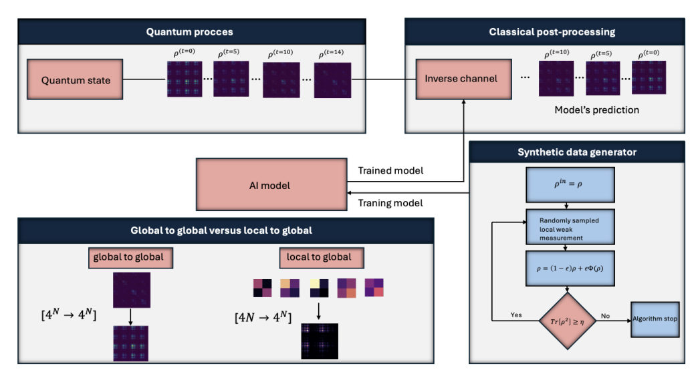
<figcaption class="paper-figure-caption"><b>Fig 1.</b> FIG. 1: Schematic of the diffusion-like quantum-noise process and the AI-assisted inverse-channel reconstruction. An initial quantum state ρ0 is evolved through a sequence of weak-measurement-induced noisy channels, producing a trajectory of mixed states {ρt}T t=1. An AI model is trained to approximate the inverse channel and map each noisy intermediate state ρt back toward the original state ρ0. The upper panels show the forward noisy evolution and the reverse trajectory predicted by the trained model. The lower-left panel compares global-to-global reconstruction, in which the complete noisy N-qubit density matrix is provided, with local-to-global reconstruction, in which only the...</figcaption>
</figure>
<figure class="paper-figure-card">
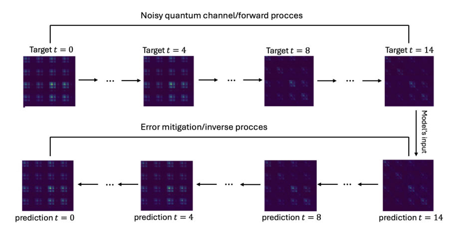
<figcaption class="paper-figure-caption"><b>Fig 2.</b> FIG. 2: Example of the separable six-qubit denoising task. An input state evolves under a noisy quantum channel and is gradually degraded. The trained model receives the noisiest state, corresponding to the output of the noisy channel, and learns an effective inverse map that reconstructs the erased information. The reconstructed state achieves FGM &gt; 0.99 for a sequence length of 15 steps.</figcaption>
</figure>
<figure class="paper-figure-card">
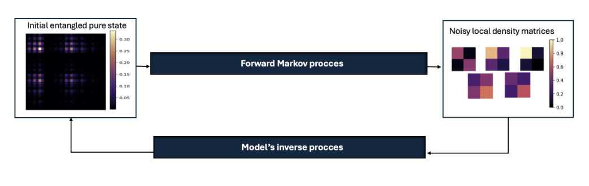
<figcaption class="paper-figure-caption"><b>Fig 3.</b> FIG. 3: Example of the local-to-global inverse reconstruction task for a five-qubit quantum register, which constitutes the most challenging dataset considered in this work. The reconstruction is performed using the Vision Transformer model. The model receives as input the five single-qubit reduced density matrices obtained from the noisy global state and predicts the corresponding initial global density matrix.</figcaption>
</figure>
<figure class="paper-figure-card">
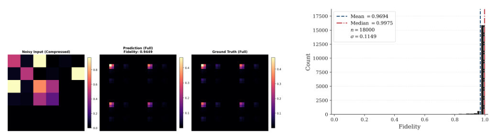
<figcaption class="paper-figure-caption"><b>Fig 4.</b> FIG. 4: Configuration and local-to-global reconstruction results. (a) Example of a noisy local quantum-register input, together with the model prediction and the corresponding ground truth. The reconstructed state achieves FGM = 0.9449. (b) Reconstruction-FGM distribution on the held-out test set (n = 18,000 states). The mean and median fidelities are FGM = 0.9694 and eFGM = 0.9975, respectively, with standard deviation σ = 0.1149. Moreover, 91.6% of the states achieve FGM ≥0.95, while 80.0% achieve FGM ≥0.99. The model is trained on n = 5-qubit states generated with m = 4, ϵ = 0.1, and a target purity of 0.55. Each of the 15,000 generated states is expanded into a noisy trajectory of...</figcaption>
</figure>
<figure class="paper-figure-card">
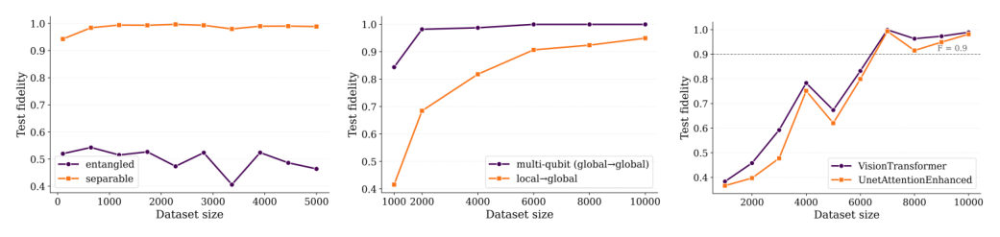
<figcaption class="paper-figure-caption"><b>Fig 5.</b> FIG. 5: Test fidelity as a function of training-set size for different four-qubit reconstruction tasks and model architectures. (a) The same LSTM architecture trained on entangled states (full d × d density matrix, purple circles) versus separable product states (a collection of n single-qubit 2 × 2 matrices, orange squares), with ϵ = 0.1 and η = 0.55. The separable representation is learned almost perfectly from as few as 100 examples, whereas the fidelity for entangled states remains near 0.5 regardless of dataset size, highlighting the difficulty of learning genuinely entangled states. (b) The same ViT diffusion model trained to denoise the full 16 × 16 global density matrix directly...</figcaption>
</figure>
</div>

<p><strong>Summary.</strong> The paper introduces an AI-assisted framework to mitigate quantum noise caused by environmental coupling, modeling the process as a diffusion-like trajectory. It trains neural networks on synthetic data from weak measurements to learn an effective inverse map that reconstructs the original quantum state from noisy observations. This offers a powerful hybrid classical-quantum approach for approximating non-unitary dynamics in noisy quantum systems.</p>
<p><strong>Why it may be interesting.</strong> This work provides a concrete, machine learning-driven methodology for tackling open quantum system dynamics in noisy environments, which is crucial for scaling up near-term quantum hardware by mitigating coherence loss.</p>
<details>
<summary>Detailed structure</summary>
<p><strong>Main problem.</strong> The paper addresses quantum error mitigation by developing an AI-assisted framework to estimate the initial state of a quantum system corrupted by decoherence.</p>
<p><strong>Main result.</strong> They propose using machine learning models (like U-Nets and Transformers) trained on synthetic data from weak measurements to learn an effective, non-unitary denoising map that approximates the inverse noisy evolution channel.</p>
<p><strong>Method.</strong> The core method involves training neural networks to map observed noisy density matrices ($
ho_t$) back to their estimated pre-noise state ($
ho_0$), mimicking classical diffusion model inversion techniques in a quantum context.</p>
<p><strong>Model / system.</strong> The system is an arbitrary quantum state undergoing decoherence modeled by sequential local weak measurements, which generate a quantum diffusion process. The framework treats the noise as a sequence of non-unitary operations.</p>
<p><strong>Key observables.</strong> Reconstructed initial density matrix ($
ho_0$), noisy intermediate states (${
ho_t}$), and the fidelity of reconstruction across single and multi-qubit registers.</p>
<p><strong>Important parameters / regimes.</strong> Measurement strength parameter ($\epsilon$) and the noise process parameters derived from Pauli basis measurements.</p>
<p><strong>Assumptions / limitations.</strong> The inverse process is an approximation, not a strictly physical quantum channel; local measurement independence is assumed for global reconstruction; and post-processing filters are used to enforce density matrix constraints.</p>
<p><strong>Figures summary.</strong> Figures schematically illustrate the forward noisy evolution via weak measurements and the AI model's role in approximating the reverse path from $\{
ho_t\}$ back to $
ho_0$, comparing global vs. local reconstruction capabilities.</p>
<p><strong>Paper structure.</strong> The paper first introduces the physical problem of decoherence via weak measurements, then draws an analogy to classical diffusion models, details the training process using various ML architectures (LSTM, ViT, U-Net), and concludes with rigorous mathematical filtering techniques for ensuring output validity.</p>
</details>
<details>
<summary>Abstract</summary>
<p>Coupling between a quantum system and its environment causes decoherence by transferring information from the system to environmental degrees of freedom. When discretized in time, such interactions can be interpreted as sequences of weak measurements that provide an effective model of noisy quantum dynamics. Motivated by this picture, we propose an AI-assisted error-mitigation framework for quantum diffusion processes generated by sequential local weak measurements. The forward process progressively erases information from the input state through weak measurements performed in randomly selected Pauli bases, producing basis-dependent local dephasing and locally depolarizing dynamics on average. Machine-learning models are trained on exact synthetic density matrices to learn a channel- and distribution-specific denoising map and estimate the corresponding pre-noise state. We benchmark the approach on single-qubit states and separable and entangled multi-qubit registers. We also study distribution-dependent local-to-global reconstruction, in which local reduced density matrices are used to reconstruct the global state. This experimentally motivated setting relies on locally accessible information and is therefore compatible with noisy and distributed quantum systems. More broadly, the framework provides a hybrid classical-quantum approach for approximating non-unitary dynamics and mitigating coherence loss.</p>
</details>
<p><sub><a href="#top">↑ back to top</a></sub></p>

<p><a id="paper-2608.06194"></a></p>
<h3 id="quantum-fluctuation-relations-in-first-detection-processes"><a href="http://arxiv.org/abs/2608.06194v1">Quantum fluctuation relations in first-detection processes</a></h3>
<p><strong>Authors:</strong> A. Imparato<br>
<strong>Type:</strong> theory · <strong>Category:</strong> statistical mechanics · <strong>PDF:</strong> <a href="https://arxiv.org/pdf/2608.06194v1">https://arxiv.org/pdf/2608.06194v1</a><br>
<strong>Analysis basis:</strong> full PDF text, analyzed in chunks
<strong>Topic relevance:</strong> 🔥 <code>measurement-induced transitions</code> <strong>4/5</strong> · <code>non-equilibrium dynamics</code> <strong>3/5</strong> · <code>quantum measurements</code> <strong>3/5</strong> · <code>non-equilibrium universality</code> <strong>2/5</strong> · <code>Keldysh / 2PI / non-Gaussian methods</code> <strong>1/5</strong> · <code>correlated / nonlocal dissipation</code> <strong>1/5</strong> · <code>driven-dissipative phase transition</code> <strong>1/5</strong> · <code>entanglement &amp; information structure</code> <strong>1/5</strong> · <code>methods for driven-dissipative</code> <strong>1/5</strong></p>
<div class="figure-strip-hint">↔ Scroll figures horizontally</div>
<div class="paper-figures-scroll">
<figure class="paper-figure-card">
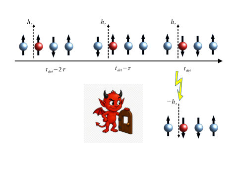
<figcaption class="paper-figure-caption"><b>Fig 1.</b> FIG. 1. First detection information-to-work converter. The demon measures the z-component of the red spin alone with period τ. At time tdet the spin is found for the first time to be antialigned with the external field, and the field acting on the red spin is instantaneously changed by the demon to the value −hz. The operation results in a net extracted work 2hz</figcaption>
</figure>
<figure class="paper-figure-card">
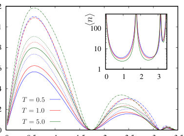
<figcaption class="paper-figure-caption"><b>Fig 2.</b> FIG. 2. Full lines: average extracted work rate ˙wex (eq. (23)) as a function of the sampling interval τ for the two–spin model described in the text, and different values of the temperature. Dashed lines upper bound for the extracted work rate ˙wex</figcaption>
</figure>
</div>

<p><strong>Summary.</strong> This theoretical paper develops generalized fluctuation relations for calculating work extracted from quantum devices that operate based on a first-detection trigger mechanism. It shows that these relations correct the standard Jarzynski equality by incorporating an entropic term related to the average detection time. The results establish fundamental, measurable limits on energy conversion in such measurement-driven quantum engines.</p>
<p><strong>Why it may be interesting.</strong> This work extends fundamental theorems like the Jarzynski equality into the regime of measurement-induced quantum engines, providing new bounds on energy extraction that depend on the measurement protocol itself. This is highly relevant for understanding non-equilibrium thermodynamics in open quantum systems.</p>
<details>
<summary>Detailed structure</summary>
<p><strong>Main problem.</strong> The paper derives quantum fluctuation relations characterizing the work extractable from a quantum device undergoing repeated projective measurements triggered by a first-detection event.</p>
<p><strong>Main result.</strong> Two new fluctuation relations are established, correcting the standard Jarzynski equality with an entropic term dependent on the mean first-detection time. These relations provide fundamental limits on both total and extracted work.</p>
<p><strong>Method.</strong> The derivation utilizes principles of quantum thermodynamics, applying Jensen's inequality to relate expectation values involving exponential functions of work, and employing time-reversal symmetry arguments.</p>
<p><strong>Model / system.</strong> The model is a quantum device subjected to repeated projective measurements (a 'quantum first-detection information engine'). The analysis considers the general case where the system interacts with an external environment.</p>
<p><strong>Key observables.</strong> Work extracted ($W_{	ext{ex}}$), total work exchanged ($W_{	ext{tot}}$), average first-detection time ($\langle n 
angle$), and survival probability ($S_\infty$).</p>
<p><strong>Important parameters / regimes.</strong> Temperature ($eta$), measurement interval ($  au$), and the initial state $
ho_{in}$.</p>
<p><strong>Assumptions / limitations.</strong> The analysis is based on the Two-Projective-Measurement (TPM) scheme, and certain normalization procedures are required if the survival probability $S_\infty[
ho_{in}] > 0$.</p>
<p><strong>Figures summary.</strong> Figure 1 illustrates a 'First detection information-to-work converter' setup. Figure 2 compares extracted work ($\dot{w}_{	ext{ex}}$) against its upper bound derived from Jensen's inequality and first-detection mediated ergotropy.</p>
<p><strong>Paper structure.</strong> The paper builds upon the standard Quantum Jarzynski Equality (QJE) by incorporating the non-Markovian effects of repeated measurements. It derives fluctuation relations for total work and extracted work, showing how these are modified by terms related to the mean first-detection time.</p>
</details>
<details>
<summary>Abstract</summary>
<p>We derive two quantum fluctuation relations for systems undergoing repeated projective measurements. These fluctuation relations characterize the work that can be extracted from a quantum device when a first-detection event triggers a mechanical operation leading to positive work production. The correction to the standard quantum Jarzynski equality depends logarithmically on the mean first-detection time for the time-reversed dynamics.   Application of Jensen's inequality leads to fundamental limits on both the total work involved in the repeated measurements and final mechanical operation, and the extracted work alone.   The general case of a device connected to an external environment is also considered.</p>
</details>
<p><sub><a href="#top">↑ back to top</a></sub></p>

<p><a id="paper-2608.05298"></a></p>
<h3 id="identifying-slow-relaxation-in-many-body-quantum-systems-through-state-graph-geometry-and-state-graph-heterogeneity"><a href="http://arxiv.org/abs/2608.05298v1">Identifying slow relaxation in many-body quantum systems through state-graph geometry and state-graph heterogeneity</a></h3>
<p><strong>Authors:</strong> Heiko Georg Menzler, Tom Ben-Ami<br>
<strong>Type:</strong> theory · <strong>Category:</strong> statistical mechanics · <strong>PDF:</strong> <a href="https://arxiv.org/pdf/2608.05298v1">https://arxiv.org/pdf/2608.05298v1</a><br>
<strong>Analysis basis:</strong> full PDF text, analyzed in chunks
<strong>Topic relevance:</strong> 🔥 <code>non-equilibrium dynamics</code> <strong>4/5</strong> · <code>analog quantum simulation</code> <strong>3/5</strong> · <code>scars &amp; prethermalization</code> <strong>3/5</strong> · <code>non-equilibrium universality</code> <strong>2/5</strong> · <code>correlated / nonlocal dissipation</code> <strong>1/5</strong> · <code>driven-dissipative phase transition</code> <strong>1/5</strong> · <code>entanglement &amp; information structure</code> <strong>1/5</strong> · <code>methods for driven-dissipative</code> <strong>1/5</strong></p>
<div class="figure-strip-hint">↔ Scroll figures horizontally</div>
<div class="paper-figures-scroll">
<figure class="paper-figure-card">
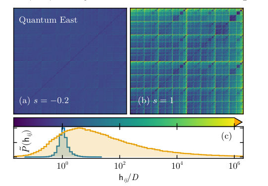
<figcaption class="paper-figure-caption"><b>Fig 1.</b> Figure 1: Hitting matrix ˆh in the QEM with L = 10 (D = 210) in the (a) fast-dynamics (s = −0.2) and (b)</figcaption>
</figure>
<figure class="paper-figure-card">
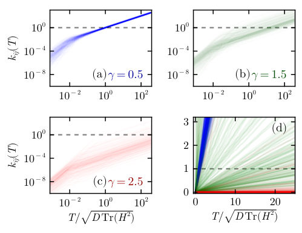
<figcaption class="paper-figure-caption"><b>Fig 2.</b> Figure 2: Kernel function kij(T) for a representative state |i⟩and other states |j⟩in the computational basis in the RPM for (a) ergodic extended phase γ = 0.5, (b) non- ergodic extended phase γ = 1.5 and (c) localized phase γ = 2.5. (d) combines data from the three other subplots, showing linear behavior of kij(T) at large T. Horizontal dashed lines indicate a cutoff value C = 1.</figcaption>
</figure>
<figure class="paper-figure-card">
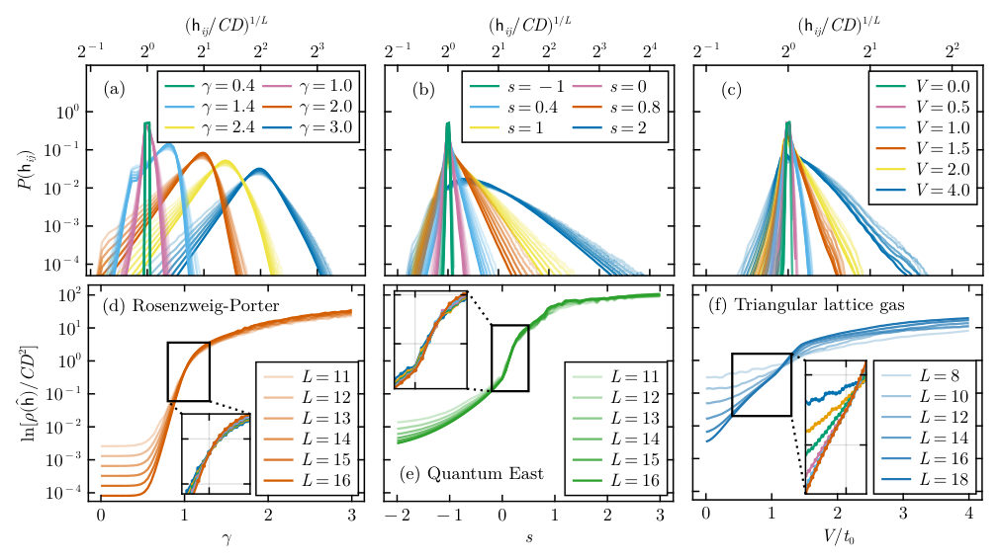
<figcaption class="paper-figure-caption"><b>Fig 3.</b> Figure 3: Characterization of heterogeneous relaxation through ˆh. (a)-(c) Distribution of the hitting matrix elements hij across system parameters in the (a) RPM L = 10 –15, (b) QEM model L = 10 –15 and (c) the TLGM L = 14 –19 with N = ⌊L/2⌋, respectively. Lighter colors indicate smaller system sizes. The rescaling h1/L ij ensures that distributions have a comparable support across the investigated system sizes. (d)-(f) Spectral radius (largest eigenvalue) of the hitting matrix ρ(ˆh) against system parameters in the (d) RPM, (e) QEM and (f) TLGM for various system sizes. Insets show a zoom-in of the crossings. The logarithm of ρ(ˆh) is shown on a log-scale, making the visualization...</figcaption>
</figure>
<figure class="paper-figure-card">
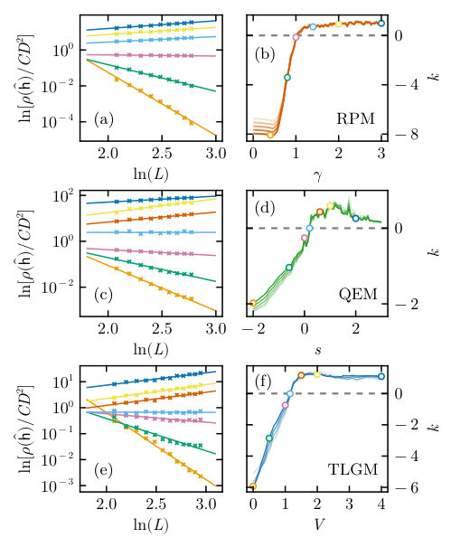
<figcaption class="paper-figure-caption"><b>Fig 4.</b> Figure 4: Finite-size scaling analysis of ρ(ˆh) for the RPM [(a)-(b)], QEM [(c)-(d)], and TLGM [(e)-(f)]. The crossing point is determined from the finite-size scaling exponent. The exponent k is obtained from a linear fit in log-log space, as ln[ρ(ˆh)] ∝Lk. The left column [(a), (c), (e)] shows the log-log plots of ln[ρ(ˆh)] versus L together with the linear fits. The right column [(b), (d), (f)] shows k as a function of the tuning parameter. The dashed vertical line corresponds to k = 0 where ln[ρ(ˆh)] shows a flat scaling. Each marker color corresponds to a single tuning parameter value; the same color is used in the right column to show the finite-size fits. To assess the finite-size...</figcaption>
</figure>
</div>

<p><strong>Summary.</strong> The paper develops a geometric framework using state graphs and hitting times to detect slow relaxation in many-body quantum systems. By analyzing the spectral radius of the graph's hitting matrix, the authors show that this metric acts as a sensitive indicator, sharply changing at the transition into slow dynamics across multiple model types.</p>
<p><strong>Why it may be interesting.</strong> This work provides a powerful, unified graph-theoretic formalism to diagnose non-equilibrium dynamics in complex quantum systems, which is highly relevant for understanding thermalization and glassy behavior in AMO or condensed matter settings.</p>
<details>
<summary>Detailed structure</summary>
<p><strong>Main problem.</strong> The research aims to identify and characterize slow relaxation dynamics in complex many-body quantum systems.</p>
<p><strong>Main result.</strong> Slow dynamics are robustly identified by analyzing the geometry of the state graph, specifically through a sharp increase in the spectral radius of the hitting matrix at the transition point.</p>
<p><strong>Method.</strong> The authors adapt tools from quantum random walks theory to construct and analyze the 'many-body state graph' using quantum hitting times derived from the unitary time-evolution operator.</p>
<p><strong>Model / system.</strong> Three paradigmatic models are studied: the Rosenzweig-Porter model (RPM), the quantum East model (QEM), and the triangular lattice gas model (TLGM). The analysis is general for systems with discrete Hilbert spaces governed by a Hamiltonian H.</p>
<p><strong>Key observables.</strong> Pairwise hitting times ($h_{ij}$), the kernel function $k_{ij}(T)$, and the spectral radius of the hitting matrix ($
ho(\hat{h})$).</p>
<p><strong>Important parameters / regimes.</strong> Control parameters tuning the system across regimes, such as $\gamma$ in RPM or $s$ in QEM, which dictate the transition between fast and slow dynamics.</p>
<p><strong>Assumptions / limitations.</strong> The analysis relies on constructing a state graph where nodes are basis states and using asymptotic limits of time-averaged quantities to characterize long-time behavior.</p>
<p><strong>Figures summary.</strong> Figures illustrate how $
ho(\hat{h})$ changes across dynamical regimes, showing sharp increases at the onset of slow dynamics for QEM and RPM. Other figures show the evolution of $k_{ij}(T)$ over time T.</p>
<p><strong>Paper structure.</strong> The paper introduces the state-graph formalism using quantum hitting times; it applies this framework to three distinct models (RPM, QEM, TLGM); it establishes that graph geometry metrics like $
ho(\hat{h})$ serve as universal indicators for slow relaxation transitions; and finally, it discusses the connection between these geometric measures and autocorrelation function decay.</p>
</details>
<details>
<summary>Abstract</summary>
<p>We adapt tools from the theory of quantum random walks to investigate slow relaxation dynamics through the many-body state graph. Specifically, we construct a probe of heterogeneity between basis states defined using hitting times derived from the unitary time-evolution operator. We find that the state-graph geometry, encoded by the pairwise hitting time of basis states, is a highly sensitive indicator of slow relaxation dynamics in a variety of systems. We study three paradigmatic models: the Rosenzweig-Porter model, the quantum East model, and the triangular lattice gas model, exhibiting a sudden onset of slow dynamics upon tuning of a control parameter. As a global characterization of the graph geometry, we analyze the spectral radius of the hitting matrix. We find that it increases sharply at the onset of slow dynamics, spanning many orders of magnitude, with a characteristic crossing point at the transition. Our work provides a geometric framework for describing and identifying phases with slow relaxation using a unified graph-theoretic formalism.</p>
</details>
<p><sub><a href="#top">↑ back to top</a></sub></p>

<p><a id="paper-2608.06233"></a></p>
<h3 id="anyon-impurity-bound-states-in-quantum-engineered-fractional-chern-insulators"><a href="http://arxiv.org/abs/2608.06233v1">Anyon-Impurity Bound States in Quantum-Engineered Fractional Chern Insulators</a></h3>
<p><strong>Authors:</strong> Botao Wang, Amit Vashisht, Felix A. Palm, Fabian Grusdt, Laurens Vanderstraeten, Nathan Goldman<br>
<strong>Type:</strong> theory · <strong>Category:</strong> strongly correlated electrons · <strong>PDF:</strong> <a href="https://arxiv.org/pdf/2608.06233v1">https://arxiv.org/pdf/2608.06233v1</a><br>
<strong>Analysis basis:</strong> full PDF text, analyzed in chunks
<strong>Topic relevance:</strong> 🔥 <code>analog quantum simulation</code> <strong>4/5</strong> · <code>Kondo &amp; dissipative impurity</code> <strong>3/5</strong> · <code>methods for driven-dissipative</code> <strong>3/5</strong> · <code>non-equilibrium dynamics</code> <strong>2/5</strong> · <code>Frenkel-Kontorova</code> <strong>1/5</strong> · <code>Keldysh / 2PI / non-Gaussian methods</code> <strong>1/5</strong> · <code>entanglement &amp; information structure</code> <strong>1/5</strong></p>
<div class="figure-strip-hint">↔ Scroll figures horizontally</div>
<div class="paper-figures-scroll">
<figure class="paper-figure-card">
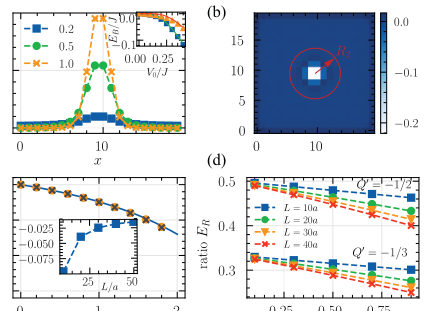
<figcaption class="paper-figure-caption"><b>Fig 1.</b> FIG. 1. (a) The spatial density distribution of a single particle (along the center row) in finite system under peri- odic boundary condition with different trapping potentials V0/J = 0.2, 0.5 and 1.0. Inset: the binding energy E2D/J as a function of trap strength V0/J for different impurity hopping strength Jimp/J = 0.6 (squares) and Jimp/J = 1 (triangles). The solid lines represent the analytic results of Eq.(5) after the substitution mimp = ℏ2/2Jimpa2. The numerical results are associated with the Hamiltonian ˆH′ imp with R1 = 2a and system size 20 × 20 under periodic boundary condition. (b) The spatial density distribution in a Chern insulator with pin- ning potentials Vpin = 2J. (c)...</figcaption>
</figure>
<figure class="paper-figure-card">
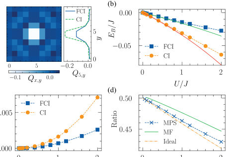
<figcaption class="paper-figure-caption"><b>Fig 2.</b> FIG. 2. (a) Spatial distribution of the fractional charge Q = −1/2 in the ν = 1/2-FCI. Right: Charge density profiles along the central cut. The dashed line shows the corresponding integer-charge distribution in the CI. (b) Binding energy EB as a function of the impurity-host interaction strength U for the CI (orange dots) and FCI (blue squares). The green and red solid curves denote the corresponding mean-field results obtained from ˆH′′ imp. (c) The binding energy difference δEB = E′ B −EB as a function of interaction strength U. (d) Ratio of binding energies EB(ν = 1/2)/EB(ν = 1) as a function of U/J. The calculations are performed for N = 10 particles in the ν = 1/2 FCI and N = 21 free...</figcaption>
</figure>
<figure class="paper-figure-card">
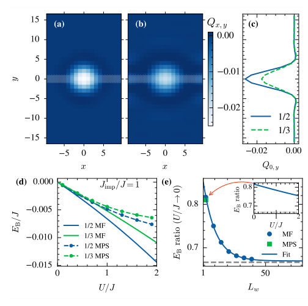
<figcaption class="paper-figure-caption"><b>Fig 3.</b> FIG. 3. Spatial distribution of the fractional charge (a) Q = −1/2 and (b) Q = −1/3 associated with domain wall excitation using infinite MPS with circumference Lx = 19. (c) Charge density profiles along the central cut. (d) Bind- ing energy EB as a function of the impurity-host interac- tion strength U for ν = 1/2 and 1/3 within window size Lw = 3. (e) Ratio of binding energies at weak interaction limit (U/J = 0.01) as a function of the window size. Inset: Ratio of binding energies for window size Lw = 3 as a func- tion of U.</figcaption>
</figure>
<figure class="paper-figure-card">
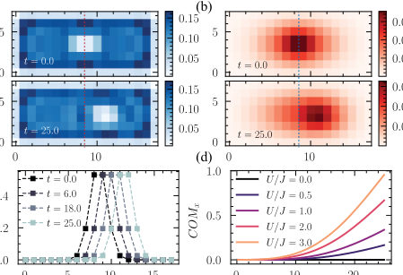
<figcaption class="paper-figure-caption"><b>Fig 4.</b> FIG. 4. Spatial density distributions of (a) the host particles and (b) the impurity at evolution times tJ/ℏ= 0.0, 12.0 and 25.0 (from top to bottom) for U/J = 3.0. (c) Spatial profiles of the host pinning potentials along the row y = 3 at different times. (d) Center-of-mass of the impurity as a function of evolution time for different interaction strengths U.</figcaption>
</figure>
<figure class="paper-figure-card">
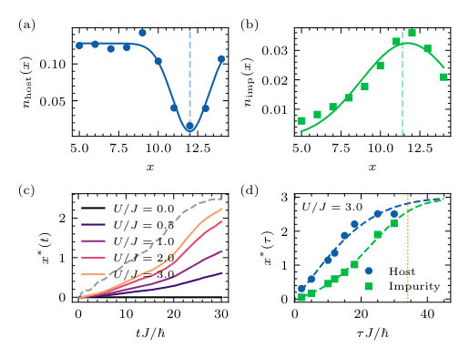
<figcaption class="paper-figure-caption"><b>Fig 5.</b> FIG. 5. Spatial density distributions of (a) the host parti- cles and (b) the impurity along the central row y = 4 within the bulk for U = 3J and time t = 30ℏ/J. The solid lines show the corresponding (inverted) Gaussian fits. The vertical dashed lines indicate the positions of the minimum and max- imum, denoted by x∗. (c) Peak position of the impurity as a function of evolution time for different impurity–host inter- action strengths U. The dashed line denotes the position of the host-particle density minimum, which is independent of U. (d) Positions of the host-particle density minimum (blue dots) and the impurity density maximum (green squares) as a function of total dragging time τ for...</figcaption>
</figure>
</div>

<p><strong>Summary.</strong> This paper theoretically investigates how mobile impurities bind to fractional quasihole excitations within Fractional Chern Insulators. By analyzing the binding energy of these anyon-impurity composites using advanced numerical techniques, the authors propose a robust method to experimentally measure the fractional charge inherent to the topological state. This establishes a pathway for controlled manipulation and braiding of exotic quasiparticles in quantum simulators.</p>
<p><strong>Why it may be interesting.</strong> This work bridges topological physics (FCIs) with impurity physics, providing concrete, measurable signatures (binding energy ratios) that can be used to verify exotic fractional charge excitations in controllable quantum simulators.</p>
<details>
<summary>Detailed structure</summary>
<p><strong>Main problem.</strong> The study investigates the formation, structure, and energetics of bound states between a mobile impurity and pinned quasihole excitations within Fractional Chern Insulators (FCIs). The ultimate goal is to establish controllable protocols for manipulating these anyonic composite objects.</p>
<p><strong>Main result.</strong> The binding energy analysis provides a direct method to extract the fractional charge of the underlying quasihole. Furthermore, controlled transport of this composite object can be demonstrated by externally steering the pinning potential.</p>
<p><strong>Method.</strong> The research combines analytical arguments with large-scale numerical simulations, utilizing techniques like Mean Field theory and Tensor Network methods (iMPS/DMRG) to analyze ground state energies in lattice models.</p>
<p><strong>Model / system.</strong> The system is modeled using the interacting Harper–Hofstadter model deep in the FCI regime, applicable to quantum-engineered platforms. The Hamiltonian includes terms for host interactions ($\hat{H}_{	ext{host}}$), mobile impurity hopping ($\hat{H}_{	ext{imp}}$), and their coupling ($\hat{H}_U$).</p>
<p><strong>Key observables.</strong> Binding energy ($E_B$), fractional charge of the quasihole ($Q'$), integrated charge response to pinning potentials, and the ratio of binding energies $E_R$.</p>
<p><strong>Important parameters / regimes.</strong> Interaction strength ($U/J$), flux ($\phi$), filling fraction ($
u=1/2, 1/3$), and the strength of external pinning potentials ($V_h$).</p>
<p><strong>Assumptions / limitations.</strong> The analysis often employs mean-field approximations for the impurity-host interaction term and relies on specific lattice models (Harper-Hofstadter) to represent the topological state.</p>
<p><strong>Figures summary.</strong> Figures illustrate density distributions, binding energy dependence on trap strength/interaction, and how the ratio of binding energies approaches expected fractional charge values in both CI and FCI regimes.</p>
<p><strong>Paper structure.</strong> The paper progresses from analyzing single-particle bound states in traps to modeling interacting systems using the Harper-Hofstadter model. It systematically calculates binding energies for integer vs. fractional charges, demonstrating how external potentials control the excitation state and enabling proposals for braiding protocols.</p>
</details>
<details>
<summary>Abstract</summary>
<p>Mobile impurities provide a powerful means of probing correlated and topological quantum matter, through their dressing by the surrounding medium and the practical probes granting access to the resulting composite object. Motivated by the recent observation of anyon-impurity composites in the solid state, as well as recent realizations of Laughlin-type states in engineered lattice systems, we investigate the formation of a bound state between a mobile impurity and a single pinned quasihole in the interacting Harper-Hofstadter model deep in the fractional Chern insulator regime. Combining analytical arguments with large-scale numerical simulations, we characterize the structure, energetics, and stability of hybrid anyon-impurity bound states, and show that their binding energy provides direct access to the fractional charge of the quasihole under conditions that we identify. We further demonstrate that the composite object can be coherently transported by externally steering the quasihole pinning potential. Our results establish a realistic pathway for controlled anyon-impurity manipulation in quantum-engineered platforms, enabling experimentally feasible protocols for braiding.</p>
</details>
<p><sub><a href="#top">↑ back to top</a></sub></p>

<p><a id="paper-2608.06242"></a></p>
<h3 id="exponential-logical-error-reduction-in-quantum-memories-via-optimal-syndrome-measurement-timing"><a href="http://arxiv.org/abs/2608.06242v1">Exponential logical-error reduction in quantum memories via optimal syndrome-measurement timing</a></h3>
<p><strong>Authors:</strong> Tobias Haug, Kishor Bharti, Leandro Aolita<br>
<strong>Type:</strong> theory · <strong>Category:</strong> quantum information and computing · <strong>PDF:</strong> <a href="https://arxiv.org/pdf/2608.06242v1">https://arxiv.org/pdf/2608.06242v1</a><br>
<strong>Analysis basis:</strong> full PDF text, analyzed in chunks
<strong>Topic relevance:</strong> 🔥 <code>quantum measurements</code> <strong>4/5</strong> · <code>measurement-induced transitions</code> <strong>3/5</strong> · <code>methods for driven-dissipative</code> <strong>3/5</strong> · <code>non-equilibrium dynamics</code> <strong>2/5</strong> · <code>Keldysh / 2PI / non-Gaussian methods</code> <strong>1/5</strong> · <code>correlated / nonlocal dissipation</code> <strong>1/5</strong> · <code>driven-dissipative phase transition</code> <strong>1/5</strong></p>
<div class="figure-strip-hint">↔ Scroll figures horizontally</div>
<div class="paper-figures-scroll">
<figure class="paper-figure-card">
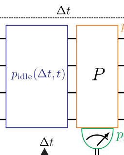
<figcaption class="paper-figure-caption"><b>Fig 1.</b> FIG. 1. Optimal syndrome measurement timings in fault-tolerant quantum memories. For each syndrome- measurement round lasting physical time ∆t, faults occur due to finite qubit lifetime with probability pidle(∆t, t) that in- creases with ∆t. Syndrome measurements induce noise which is independent of ∆t, where faults in data qubits occur with probability pstab and read-out errors in the measuring device with probability pread. After the final syndrome measurement round, the decoder uses the space-time history of obtained syndromes to infer the best correction operation to recover the original logical state. We choose ∆t to optimally trade- off between errors due to syndrome measurement and...</figcaption>
</figure>
<figure class="paper-figure-card">
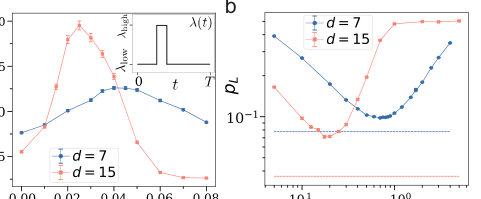
<figcaption class="paper-figure-caption"><b>Fig 2.</b> FIG. 3. Adaptive syndrome measurement timing for dynamic noise. We consider burst noise (9) in a rotated sur- face codes with distance d. a) Improvement in logical error Γadapt of adaptive protocols over the best fixed-time protocol, plotted against burst detection threshold θ. We find maximal Γadapt ≈{1.26, 1.95} with ∆t⋆= {0.7, 0.175}. Inset shows typical burst idle noise rate λ(t) over time t. b) Total log- ical error pL of fixed-interval protocol against fixed-protocol time ∆t. Horizontal dashed lines indicate best adaptive pro- tocol with θ⋆= {0.045, 0.025}. As parameters, for d = 7 we have total time T = 2000, p = 0.015, λlow = 0.03, λhigh = 2, syndrome interval ∆thigh = 0.25 when...</figcaption>
</figure>
<figure class="paper-figure-card">
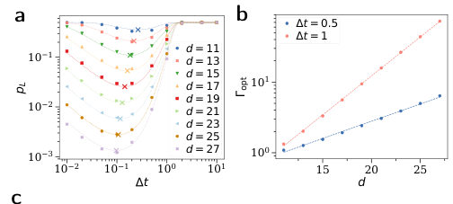
<figcaption class="paper-figure-caption"><b>Fig 3.</b> FIG. 2. Quantum memory enhancement by optimal syndrome-measurement timing for static noise. We simulate the rotated surface code for different distances d un- der a phenomenological noise model with time-independent idle rate λ = 1, base noise scale p = 0.015, read-out error factor bread = 1 and total time T = 200. a) We show the total logical error pL obtained from the full simulation (dots) and from ansatz (5) (dashed lines) where we fitted A = 1.7 while parameters β = 2, g = 0.8 and pth = 0.029 are fixed. Crosses indicate optimal ∆t⋆(d). b) Advantage factor Γopt in pL at the optimal choice of distance-dependent syndrome in- terval ∆t⋆∝1/d over fixed interval ∆t, for two different ∆t’s....</figcaption>
</figure>
<figure class="paper-figure-card">
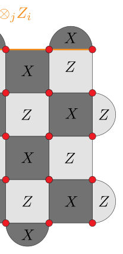
<figcaption class="paper-figure-caption"><b>Fig 4.</b> FIG. 4. Rotated surface code for d = 5.</figcaption>
</figure>
<figure class="paper-figure-card">
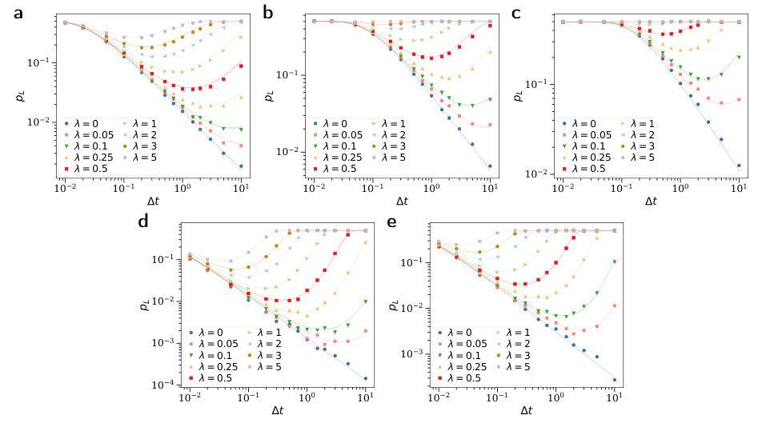
<figcaption class="paper-figure-caption"><b>Fig 5.</b> FIG. 5. Total logical error rate pL after time T against syndrome interval ∆t for different constant idling noise λ. We show numerical simulation of phenomenological noise model of the rotated surface code under matching decoding (dots) and fitted ansatz of (5). We always fix ansatz parameters β = 2, g = 0.8 and pth = 0.029, while we fit A depending on p and d. For the plots, we show different distances d with a) d = 5, p = 0.005, T = 100 and A = 0.75. b) d = 7, p = 0.01, T = 200 and A = 1.0. c) d = 11, p = 0.015, T = 500 and A = 1.4. d) d = 15, p = 0.01, T = 1000 and A = 1.5. e) d = 21, p = 0.015, T = 1000 and A = 1.9. For all plots, we choose read-out noise coefficient bread = 1.</figcaption>
</figure>
</div>

<p><strong>Summary.</strong> This paper proposes an optimal strategy for scheduling syndrome measurements in quantum error-correcting memory, treating the measurement interval as an optimizable control parameter rather than a fixed clock cycle. By deriving that the optimal interval scales inversely with code distance ($\Delta t^* \propto 1/d$), the authors show this leads to an exponential suppression of logical errors. Furthermore, they introduce an adaptive timing protocol that significantly outperforms static scheduling when noise is bursty.</p>
<p><strong>Why it may be interesting.</strong> This work provides crucial theoretical guidance for designing next-generation quantum memories by moving beyond fixed operational cycles. The focus on optimizing the measurement schedule itself is a key area in open quantum systems and fault tolerance theory.</p>
<details>
<summary>Detailed structure</summary>
<p><strong>Main problem.</strong> The primary challenge is optimizing the syndrome-measurement timing ($\Delta t$) in quantum error-correcting codes to minimize logical errors by balancing accumulating idling noise against measurement-induced faults.</p>
<p><strong>Main result.</strong> Optimal scheduling requires setting the interval inversely proportional to the code distance ($\Delta t^* \propto 1/d$), which yields an exponential reduction in logical error rates compared to fixed-interval protocols. Adaptive strategies further improve performance, especially during noise bursts.</p>
<p><strong>Method.</strong> The authors developed a phenomenological logical-noise model to analytically derive the optimal timing scaling and analyzed time-dependent noise using adaptive control theory.</p>
<p><strong>Model / system.</strong> The work focuses on fault-tolerant quantum memories implemented via rotated surface codes. The error sources modeled include idling errors (exponentially dependent on $\Delta t$) and measurement faults (linearly dependent on measurement frequency).</p>
<p><strong>Key observables.</strong> Logical error rate ($p_L$), optimal syndrome interval ($\Delta t^*$), relative suppression factor ($\Gamma_{	ext{opt}}$), and the time-dependent noise activity $\lambda(t)$.</p>
<p><strong>Important parameters / regimes.</strong> Code distance ($d$), idling noise rate ($\lambda$), measurement fault probabilities ($p_{	ext{stab}}, p_{	ext{read}}$), and experimental parameters from Google's Willow device.</p>
<p><strong>Assumptions / limitations.</strong> The analysis relies on a phenomenological logical-noise model, and the adaptive strategy assumes instantaneous knowledge of the time-dependent noise profile $\lambda(t)$.</p>
<p><strong>Figures summary.</strong> Figures illustrate the trade-off between error sources vs. $\Delta t$, showing that $\Delta t \propto 1/d$ yields exponentially lower errors than constant intervals; other figures compare fixed vs. adaptive protocols for dynamic noise.</p>
<p><strong>Paper structure.</strong> The paper first establishes the fundamental trade-off, derives the optimal scaling $\Delta t^* \propto 1/d$, and then extends this analysis to time-dependent noise using an adaptive control strategy, concluding with quantitative predictions based on current experimental hardware parameters.</p>
</details>
<details>
<summary>Abstract</summary>
<p>Syndrome-measurements timing is usually treated as a fixed clock cycle of a quantum error-correcting code. For quantum memories, however, the intra-measurement interval is itself an optimizable control parameter: measuring too rarely allows idling errors to accumulate, whereas measuring too often introduces measurement-induced faults. We propose a phenomenological logical-noise model for this trade-off and analytically show that the optimal syndrome-measurements interval scales inversely proportionally with the code distance and that this produces an exponential reduction of logical-error rates in the distance relative to constant-interval schedules. Furthermore, for time-dependent idling noise, we develop an adaptive timing strategy based on the measured syndrome activity that outperforms every fixed-interval protocol, with largest gains for short but strong noise bursts. Simulations of rotated surface-code memories with matching decoding validate the phenomenological model, the distance-dependent optimum, and the adaptive-strategy improvement. Moreover, with the experimental noise parameters reported by Google in Nature 638 (2025), our model predicts reductions in logical-error rates per unit time of up to $40\%$.</p>
</details>
<p><sub><a href="#top">↑ back to top</a></sub></p>

<p><a id="paper-2608.05330"></a></p>
<h3 id="photon-nucleon-entanglement-in-compton-scattering-at-low-and-high-energies"><a href="http://arxiv.org/abs/2608.05330v1">Photon-nucleon entanglement in Compton scattering at low and high energies</a></h3>
<p><strong>Authors:</strong> Yoshitaka Hatta, Víctor Martínez-Fernández<br>
<strong>Type:</strong> theory · <strong>Category:</strong> other · <strong>PDF:</strong> <a href="https://arxiv.org/pdf/2608.05330v1">https://arxiv.org/pdf/2608.05330v1</a><br>
<strong>Analysis basis:</strong> full PDF text, analyzed in chunks
<strong>Topic relevance:</strong> 🔥 <code>entanglement &amp; information structure</code> <strong>4/5</strong> · <code>quantum measurements</code> <strong>2/5</strong> · <code>spintronics-quantum-optics interface</code> <strong>2/5</strong> · <code>Keldysh / 2PI / non-Gaussian methods</code> <strong>1/5</strong> · <code>analog quantum simulation</code> <strong>1/5</strong> · <code>correlated / nonlocal dissipation</code> <strong>1/5</strong> · <code>driven-dissipative phase transition</code> <strong>1/5</strong> · <code>exotic spin models in light-matter</code> <strong>1/5</strong> · <code>methods for driven-dissipative</code> <strong>1/5</strong> · <code>non-equilibrium dynamics</code> <strong>1/5</strong></p>
<div class="figure-strip-hint">↔ Scroll figures horizontally</div>
<div class="paper-figures-scroll">
<figure class="paper-figure-card">
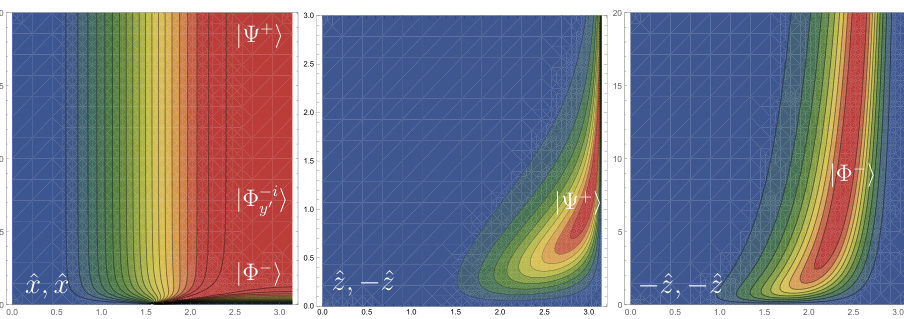
<figcaption class="paper-figure-caption"><b>Fig 1.</b> FIG. 2: Contour plot of the minimum eigenvalue λmin in electron-target Compton scattering for three different polarization configurations. (⃗se,⃗sγ) = (ˆx, ˆx) (left), (⃗se,⃗sγ) = (ˆz, −ˆz) (middle) and (⃗se,⃗sγ) = (−ˆz, −ˆz) (right). µ = ω me is the rescaled photon energy. For better legibility, the middle plot shows a different range µ &lt; 3.</figcaption>
</figure>
<figure class="paper-figure-card">
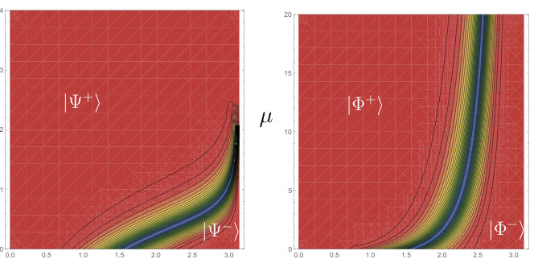
<figcaption class="paper-figure-caption"><b>Fig 2.</b> FIG. 3: Minimal eigenvalue λmin of the states resulting from the Bell states |Ψ+⟩(left) and |Ψ−⟩(right) as the initial condition. Here and in the following, the color coding is the same as in Fig. 2.</figcaption>
</figure>
<figure class="paper-figure-card">
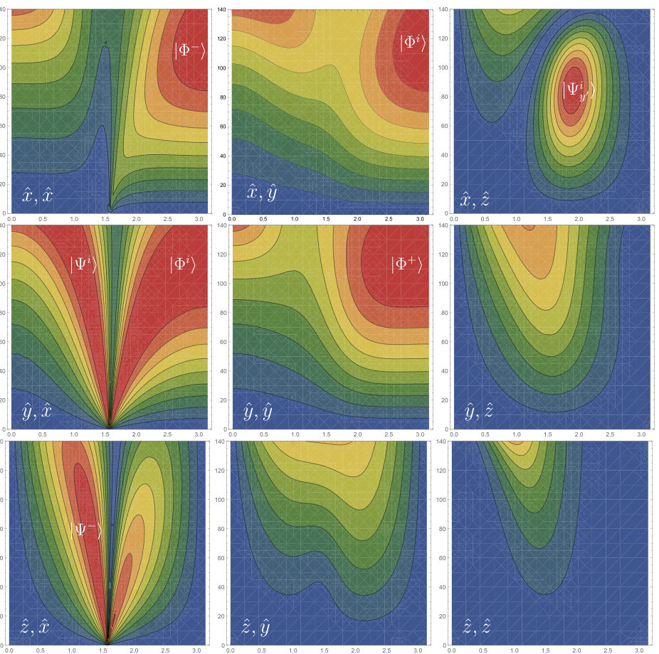
<figcaption class="paper-figure-caption"><b>Fig 3.</b> FIG. 4: The lowest eigenvalue of the partially transposed density matrix ρT (⃗sN,⃗sγ) in the (θ, ω) plane (ω in units of MeV). The label ˆx, ˆx means ⃗sN = ˆx and ⃗sγ = ˆx, etc.</figcaption>
</figure>
<figure class="paper-figure-card">
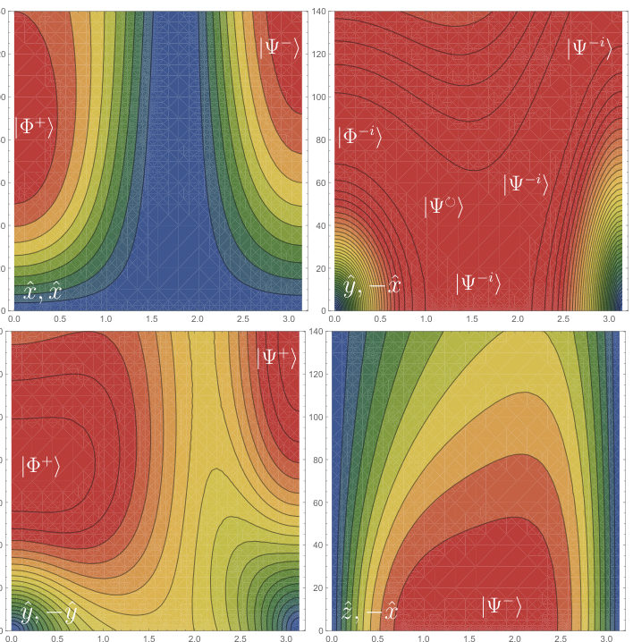
<figcaption class="paper-figure-caption"><b>Fig 4.</b> FIG. 5: The same as Fig. 4, but for the neutron target. In the (ˆy, −ˆx) plot, we have increased the number of contours since the region of strong entanglement λmin &lt; −0.45 is broad.</figcaption>
</figure>
<figure class="paper-figure-card">
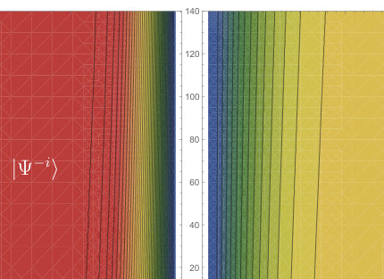
<figcaption class="paper-figure-caption"><b>Fig 5.</b> FIG. 6: Same as the (ˆy, −ˆx) and (ˆy, −ˆy) plots in Fig. 5, except that the polarizabilities are set to zero αn E = βn M = 0 by hand.</figcaption>
</figure>
</div>

<p><strong>Summary.</strong> This theoretical paper analyzes spin-spin entanglement in Compton scattering, treating the outgoing photon and nucleon as a two-qubit system. It develops formalisms using helicity amplitudes to calculate the entanglement measure ($\lambda_{\min}$), demonstrating that polarization is crucial for generating entanglement. The findings suggest this quantum diagnostic tool can map out detailed electromagnetic structure of nucleons.</p>
<p><strong>Why it may be interesting.</strong> While focused on particle physics (QCD/Electromagnetism), the core methodology—quantifying entanglement via density matrices and partial transposition criteria ($\lambda_{\min}$)—is directly transferable to analyzing quantum correlations in complex many-body or open quantum systems studied in AMO physics.</p>
<details>
<summary>Detailed structure</summary>
<p><strong>Main problem.</strong> The study investigates spin-spin entanglement generated in the final state photon-nucleon system during Compton scattering at both low and high energies.</p>
<p><strong>Main result.</strong> The authors established a no-go theorem for unpolarized scattering with real amplitudes, but found that polarized scattering reveals rich patterns of maximally entangled Bell states, suggesting entanglement is a novel tool to probe nucleon electromagnetic properties.</p>
<p><strong>Method.</strong> The analysis involves calculating the two-qubit spin density matrix ($
ho$) using helicity amplitudes derived from scattering cross-sections in different kinematic regimes (low/high energy).</p>
<p><strong>Model / system.</strong> The physical system is Compton scattering off a spin-1/2 nucleon (proton or neutron), treated as an outgoing photon and nucleon two-qubit quantum state.</p>
<p><strong>Key observables.</strong> Spin density matrix ($
ho$), minimum eigenvalue of the partially transposed density matrix ($\lambda_{\min}$), polarization vectors ($\vec{B}<em>N, \vec{B}</em>\gamma$), and correlation matrices ($C_{ab}$).</p>
<p><strong>Important parameters / regimes.</strong> Photon energy ($\omega$) relative to pion mass ($m_\pi$); electric and magnetic polarizabilities ($\alpha_E, eta_M$); scattering angle ($  heta$).</p>
<p><strong>Assumptions / limitations.</strong> The analysis relies on working in the Center-of-Mass (CM) frame; specific approximations are used for high energy via perturbative QCD/GPDs.</p>
<p><strong>Figures summary.</strong> Figure 1 illustrates Compton scattering kinematics. Figure 2 shows contour plots of $\lambda_{\min}$ mapping entanglement strength across varying photon energy and scattering angle for electron-target scattering.</p>
<p><strong>Paper structure.</strong> The paper progresses by first establishing the general formalism using helicity amplitudes to construct the density matrix, proving a no-go theorem in unpolarized cases, then detailing low-energy results sensitive to polarizabilities, and finally extending the framework to high-energy QCD calculations.</p>
</details>
<details>
<summary>Abstract</summary>
<p>We study spin-spin entanglement in the final state photon-nucleon system in Compton scattering, both at low energy below the pion threshold and at high energy in perturbative QCD to next-to-leading order. We first establish a no-go theorem showing that, for any spin-$\frac{1}{2}$ target, entanglement cannot be generated in unpolarized Compton scattering if the scattering amplitudes are real. We then consider polarized Compton scattering off the electron, the proton and the neutron. At low energy, we uncover a rich variety of maximally entangled Bell states and their unitary equivalents realized across different regions of the kinematic plane. Interestingly, the proton and neutron targets exhibit distinct patterns of entanglement. In the neutron case, the electric and magnetic polarizabilities dramatically influence the pattern and even the existence of entanglement. This suggests that entanglement can serve as a novel tool for investigating the detailed electromagnetic properties of the nucleons.</p>
</details>
<p><sub><a href="#top">↑ back to top</a></sub></p>

<p><a id="paper-2608.05988"></a></p>
<h3 id="resilient-strange-metal-at-an-unconventional-quantum-critical-point-in-math194math"><a href="http://arxiv.org/abs/2608.05988v1">Resilient strange metal at an unconventional quantum critical point in $d=2$</a></h3>
<p><strong>Authors:</strong> Jérôme Leblanc, A. -M. S. Tremblay<br>
<strong>Type:</strong> theory · <strong>Category:</strong> strongly correlated electrons · <strong>PDF:</strong> <a href="https://arxiv.org/pdf/2608.05988v1">https://arxiv.org/pdf/2608.05988v1</a><br>
<strong>Analysis basis:</strong> full PDF text, analyzed in chunks
<strong>Topic relevance:</strong> 🔥 <code>analog quantum simulation</code> <strong>4/5</strong> · <code>Keldysh / 2PI / non-Gaussian methods</code> <strong>3/5</strong> · <code>non-equilibrium universality</code> <strong>3/5</strong> · <code>driven-dissipative phase transition</code> <strong>2/5</strong> · <code>Kondo &amp; dissipative impurity</code> <strong>1/5</strong> · <code>methods for driven-dissipative</code> <strong>1/5</strong> · <code>non-equilibrium dynamics</code> <strong>1/5</strong></p>
<div class="figure-strip-hint">↔ Scroll figures horizontally</div>
<div class="paper-figures-scroll">
<figure class="paper-figure-card">
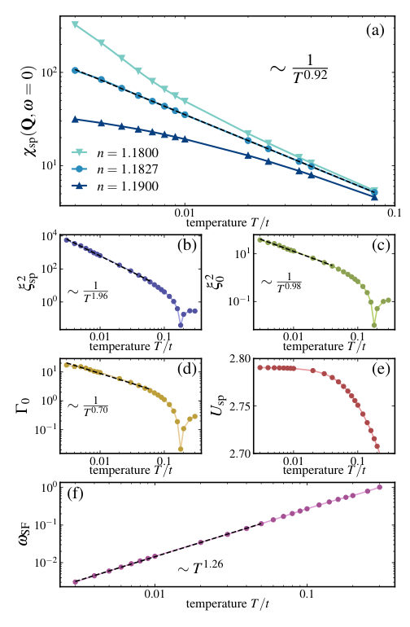
<figcaption class="paper-figure-caption"><b>Fig 1.</b> FIG. 1. Temperature dependence of spin fluctuation-related quan- tities at the QCP (n = 1.1827, circles) for t′ = t′′ = 0, U = 6t and at Q = (π −ϵ, π). Black dashed lines are power law fits at low temperatures. The resulting exponents are indicated by the in- sets ∼T a. The estimated error on a are ±0.003 for (a), ±0.02 for (b-d) and ±0.01 for (f). (a) Maximum of spin susceptibility at zero frequency. (b) Squared spin correlation length. (c) Squared micro- scopic particle-hole coherence length scale. Obtained from the sec- ond derivative with respect to qx. (d) Landau damping constant. (e) Irreducible spin vertex. (f) Characteristic spin fluctuation frequency obtained from Γ0/ξ2 sp.</figcaption>
</figure>
<figure class="paper-figure-card">
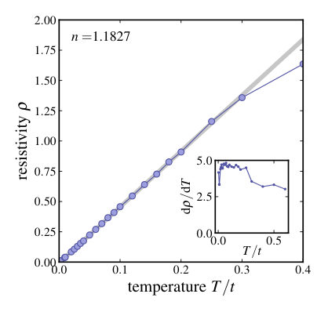
<figcaption class="paper-figure-caption"><b>Fig 2.</b> FIG. 3. Temperature dependence of resistivity at the SDW QCP (n = 1.1827) for t′ = t′′ = 0, U = 6t. Blue dots are values of resistivity, and the gray line is a linear fit for T ≤0.2t. The inset shows the derivative with respect to temperature.</figcaption>
</figure>
<figure class="paper-figure-card">
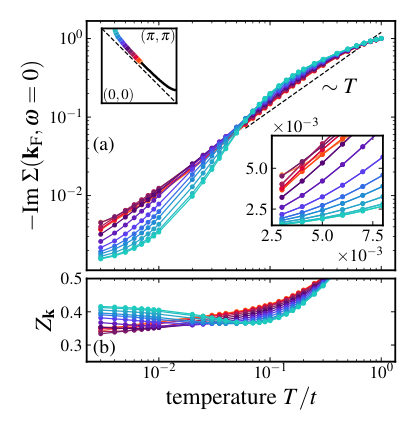
<figcaption class="paper-figure-caption"><b>Fig 3.</b> FIG. 2. (a) Temperature dependence of the imaginary part of the self-energy along the Fermi surface at the QCP (n = 1.1827) for t′ = t′′ = 0, U = 6t. The dashed line is a guide to the eye. The inset in the upper-left corner displays the color code. The full black line is the maximum of the Fermi surface, while the diagonal dashed line is the AFM Brillouin zone. The inset on the lower right shows values at low temperature near the node. This inset has linear axes. (b) Temperature dependence of the single-particle weight along the Fermi surface for the same parameters. Color code in the inset of (a).</figcaption>
</figure>
<figure class="paper-figure-card">
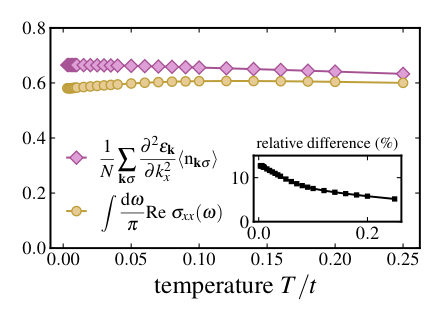
<figcaption class="paper-figure-caption"><b>Fig 4.</b> FIG. 4. Comparison between the left-hand side (yellow circles) and right-hand side (pink diamonds) of Eq. (16), as a function of temperature, at the QCP (n = 1.1827) for t′ = t′′ = 0, U = 6t. The inset shows the absolute value of the relative difference between the two.</figcaption>
</figure>
<figure class="paper-figure-card">
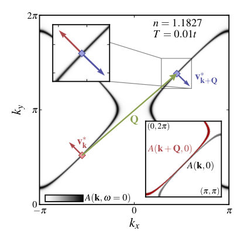
<figcaption class="paper-figure-caption"><b>Fig 5.</b> FIG. 5. Zero-frequency spectral weight at the QCP (n = 1.1827) for t′ = t′′ = 0, U = 6t and T = 0.01t. The blue and red diamonds mark 2 points on the Fermi surface related by the incommensurate SDW wavevector Qi = (π, π −ϵ) (in green). The vectors at both points are the renormalized velocities evaluated at their respective points. The inset in the top left corner shows both velocities juxta- posed at the k + Qi point. The inset in the lower right corner shows the Fermi surface (black) and a Fermi surface translated by Qi (red).</figcaption>
</figure>
</div>

<p><strong>Summary.</strong> This theoretical work predicts that strange metal behavior, characterized by linear temperature dependence of resistivity ($
ho \propto T$), persists at an unconventional quantum critical point in the 2D Hubbard model. Using advanced non-perturbative methods, the authors demonstrate this scaling occurs without requiring a simple linear-in-$T$ self-energy correction along the Fermi surface.</p>
<p><strong>Why it may be interesting.</strong> While focused on strongly correlated electron systems, the failure of quasiparticle descriptions and the emergence of linear-T resistivity at a QCP are fundamental concepts relevant to non-Fermi liquid physics studied in AMO contexts (e.g., near Feshbach resonances or quantum critical points in ultracold atomic mixtures).</p>
<details>
<summary>Detailed structure</summary>
<p><strong>Main problem.</strong> The study investigates strange metal behavior and its connection to unconventional quantum critical points (QCPs) in two dimensions where standard Fermi liquid theory breaks down.</p>
<p><strong>Main result.</strong> The authors predict that resistivity scales linearly with temperature ($
ho \propto T$) at the QCP, even when the single-particle self-energy does not exhibit a simple linear-in-$T$ dependence along the Fermi surface.</p>
<p><strong>Method.</strong> Non-perturbative calculations using an improved two-particle self-consistent approach (TPSC+) are employed to analyze correlation functions and transport properties.</p>
<p><strong>Model / system.</strong> The system modeled is the two-dimensional Hubbard model on a square lattice with nearest-neighbor hopping, focusing on fillings near but above half-filling ($n>1$).</p>
<p><strong>Key observables.</strong> Resistivity ($
ho$), single-particle self-energy ($\Sigma$), spin susceptibility ($\chi_{sp}$), and charge conductivity ($\sigma_{xx}$).</p>
<p><strong>Important parameters / regimes.</strong> The analysis is performed near the QCP separating Fermi liquid and incommensurate SDW order, with key parameters including interaction strength $U$ relative to hopping $t$.</p>
<p><strong>Assumptions / limitations.</strong> Assumptions include using the Ornstein-Zernicke form for $\chi_{sp}$ and prioritizing gauge invariance when calculating conductivity via current-current correlation functions.</p>
<p><strong>Figures summary.</strong> Figures illustrate temperature dependencies of spin fluctuation quantities ($\chi_{sp}, \xi^2_{sp}$) showing power laws, confirmation of linear resistivity scaling at low T, and comparisons between theoretical expressions for the f-sum rule.</p>
<p><strong>Paper structure.</strong> The paper develops by first establishing the physical context (strange metals near QCPs), then applying advanced many-body techniques (TPSC+) to calculate key susceptibilities and transport coefficients ($\sigma_{xx}$), ensuring gauge invariance throughout the analysis.</p>
</details>
<details>
<summary>Abstract</summary>
<p>Properties of the two-dimensional Hubbard model with nearest-neighbor hopping are under scrutiny in cold-atom experiments and diagrammatic quantum Monte Carlo. Given the controlled nature of these approaches, it is timely to make predictions about strange-metal behavior and its relation to quantum-critical properties. Even for interaction strengths below the Mott transition, several peculiarities occur at the quantum critical point separating Fermi liquid and incommensurate spin-density wave order. Here, we predict, using the non-perturbative improved two-particle self-consistent approach, that for correlation lengths ranging from about one to one hundred lattice spacings, Kohn anomalies on the underlying Fermi surface lead to unconventional critical exponents. The temperature dependence of the single-particle self-energy acquires strong momentum dependence along the Fermi surface with no clear evidence of Landau quasiparticles. Nevertheless, we observe strange-metal behavior, namely, resistivity that scales linearly with temperature as $T\rightarrow{0}$. Our work shows that a linear temperature dependence of resistivity arises without a linear-in-temperature self-energy along the Fermi surface, as is often assumed.</p>
</details>
<p><sub><a href="#top">↑ back to top</a></sub></p>

<p><a id="paper-2608.06119"></a></p>
<h3 id="hadamard-sensing-channel-deterministic-artifact-suppression-for-quantum-sensors"><a href="http://arxiv.org/abs/2608.06119v1">Hadamard sensing channel: deterministic artifact suppression for quantum sensors</a></h3>
<p><strong>Authors:</strong> Weibin Ni, Lei Sun<br>
<strong>Type:</strong> theory · <strong>Category:</strong> other · <strong>PDF:</strong> <a href="https://arxiv.org/pdf/2608.06119v1">https://arxiv.org/pdf/2608.06119v1</a><br>
<strong>Analysis basis:</strong> full PDF text, analyzed in chunks
<strong>Topic relevance:</strong> 🔥 <code>QC/QI experiment</code> <strong>4/5</strong> · <code>spintronics-quantum-optics interface</code> <strong>3/5</strong> · <code>quantum measurements</code> <strong>2/5</strong> · <code>Keldysh / 2PI / non-Gaussian methods</code> <strong>1/5</strong> · <code>correlated / nonlocal dissipation</code> <strong>1/5</strong> · <code>driven-dissipative phase transition</code> <strong>1/5</strong> · <code>exotic spin models in light-matter</code> <strong>1/5</strong> · <code>methods for driven-dissipative</code> <strong>1/5</strong></p>
<div class="figure-strip-hint">↔ Scroll figures horizontally</div>
<div class="paper-figures-scroll">
<figure class="paper-figure-card">
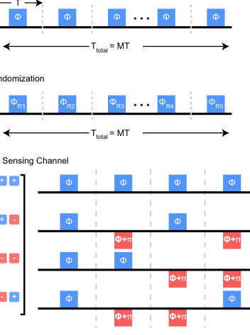
<figcaption class="paper-figure-caption"><b>Fig 1.</b> FIG. 1. Schematic representations of various sequence mod- ulation protocols. Rectangles represent pulse units. (a) The standard periodic DD sequence, consisting of repeated blocks of pulse units with a constant reference phase. (b) The phase-randomized periodic DD sequence, where a ran- dom phase offset is added to each block to suppress spurious responses, necessitating extensive statistical averaging. (c) The proposed HSC protocol applied to the periodic DD se- quence. This panel illustrates the deterministic modulation across four distinct experimental runs, dictated by the rows of a 4-dimensional Sylvester-constructed Hadamard matrix (H4). Blue rectangles represent pulse units with no...</figcaption>
</figure>
<figure class="paper-figure-card">
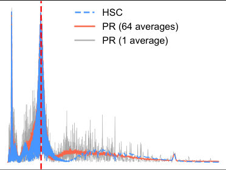
<figcaption class="paper-figure-caption"><b>Fig 2.</b> FIG. 2. Simulated spectra for sensing a single nuclear spin us- ing 64 XY-8 cycles (512 pulses in total). Parameters: target frequency fac = ω0/(2π) = 2 MHz (highlight by red dashed line), coupling strength A⊥= 2π × 200 kHz, Rabi frequency ω1/(2π) = 20 MHz, and detuning ∆z = 1 MHz. (a) Standard XY-8 sequence without phase modulation, showing significant spurious responses. (b) Comparison of spectra between PR and the HSC. The HSC protocol inherently requires multi- ple sequence variations (M = 64). A single PR realization (Navg = 1) exhibits significant statistical variance and aver- aging PR over 64 runs (Navg = 64) effectively suppresses this variance.</figcaption>
</figure>
<figure class="paper-figure-card">
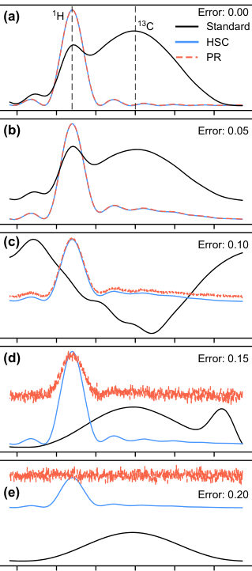
<figcaption class="paper-figure-caption"><b>Fig 3.</b> FIG. 3. Simulated dual-species nuclear spin (1H and 13C) sensing spectra using M = 256 XY-8 cycles (yielding 2048 total π pulses). The external magnetic field is B = 45 mT, corresponding to Larmor frequencies ω0,1/(2π) = 1.92 MHz (1H) and ω0,2/(2π) = 0.48 MHz (13C). The hyperfine coupling components (A⊥, A∥) are 2π×(2, 1) kHz and 2π×(20, 10) kHz for 1H and 13C, respectively. The nominal π-pulse duration is set to 200 ns (ω1/(2π) = 2.5 MHz). Panels (a)–(e) compare the standard XY-8 sequence, PR, and HSC under increasing pulse error rates—comprising equal contributions from pulse amplitude and detuning errors, expressed as percentages of the nominal Rabi frequency ω1. The PR data is averaged...</figcaption>
</figure>
</div>

<p><strong>Summary.</strong> This paper introduces the Hadamard Sensing Channel (HSC), a deterministic technique to suppress spurious signals that degrade quantum sensor readings due to imperfect microwave pulses. By leveraging the orthogonality of Hadamard matrices, HSC achieves signal cancellation superior to probabilistic methods like Phase Randomization. It offers a robust and hardware-efficient solution for high-fidelity nanoscale magnetometry.</p>
<p><strong>Why it may be interesting.</strong> This work provides a mathematically exact and hardware-friendly protocol for mitigating systematic errors in quantum sensing measurements, which is crucial for advancing high-resolution magnetometry experiments involving open quantum systems.</p>
<details>
<summary>Detailed structure</summary>
<p><strong>Main problem.</strong> Spurious responses generated by finite duration microwave pulses during dynamical decoupling sequences compromise quantum sensing fidelity in nanoscale systems.</p>
<p><strong>Main result.</strong> The proposed Hadamard Sensing Channel (HSC) deterministically cancels these spurious signals using a finite set of orthogonal phase patterns, matching ideal suppression while being more robust than probabilistic methods.</p>
<p><strong>Method.</strong> HSC employs a deterministic phase-design framework based on Hadamard matrices to average out unwanted signal components over a finite number of runs.</p>
<p><strong>Model / system.</strong> The study models quantum sensors, specifically using Nitrogen-Vacancy (NV) centers in diamond for nanoscale nuclear magnetic resonance. The system evolution is governed by a Hamiltonian involving spin operators and time-dependent fields.</p>
<p><strong>Key observables.</strong> Transition probability related to the sensor's remaining coherence ($\langle \hat{S}_x 
angle$) and the Fourier amplitude of spurious responses ($f_{\perp}$).</p>
<p><strong>Important parameters / regimes.</strong> The number of runs, $M$, which dictates the suppression factor; control error parameters like pulse angle errors and detuning.</p>
<p><strong>Assumptions / limitations.</strong> The core assumption is that exploiting the orthogonality of Hadamard matrices provides a sufficient basis for deterministic cancellation, even if it deviates from strict abelian group constructions.</p>
<p><strong>Figures summary.</strong> Figure 1 schematically compares standard DD, phase-randomized DD, and the proposed HSC protocol, illustrating deterministic modulation across four runs dictated by $H_4$.</p>
<p><strong>Paper structure.</strong> The paper first identifies spurious responses in DD sequences. It then contrasts existing methods (PR) with its novel HSC approach, deriving the suppression mechanism using Hadamard matrix properties, and finally validating performance through simulations comparing HSC against PR under realistic control errors.</p>
</details>
<details>
<summary>Abstract</summary>
<p>Dynamical decoupling sequences are essential for nanoscale quantum sensing, but the finite duration of microwave pulses generates spurious responses. While phase randomization (PR) protocol can suppress these artifacts, they rely on probabilistic averaging. This introduces an inherent statistical variance that demands excessive sequence lengths and stringent hardware capabilities for true random phase generation. Here, we propose Hadamard sensing channel (HSC), a deterministic phase-design framework based on Hadamard matrices. HSC completely eliminates the statistical variance of PR by exactly and deterministically canceling spurious signals using a finite set of orthogonal phase patterns. Simulations confirm that HSC matches the ideal suppression of PR but exhibits superior robustness against control errors. HSC offers a mathematically exact and hardware-friendly solution for reliable high-resolution nanoscale nuclear magnetic resonance.</p>
</details>
<p><sub><a href="#top">↑ back to top</a></sub></p>

<p><a id="paper-2608.05518"></a></p>
<h3 id="x-z-round-scheduling-for-the-surface-code-with-defects-under-biased-noise"><a href="http://arxiv.org/abs/2608.05518v1">X-Z Round Scheduling for the Surface Code with Defects under Biased Noise</a></h3>
<p><strong>Authors:</strong> Lakshika Rathi, Pau Escofet, Joshua Viszlai, Margaret Martonosi<br>
<strong>Type:</strong> theory · <strong>Category:</strong> quantum information and computing · <strong>PDF:</strong> <a href="https://arxiv.org/pdf/2608.05518v1">https://arxiv.org/pdf/2608.05518v1</a><br>
<strong>Analysis basis:</strong> full PDF text, analyzed in chunks
<strong>Topic relevance:</strong> 🔥 <code>quantum measurements</code> <strong>4/5</strong> · <code>measurement-induced transitions</code> <strong>3/5</strong> · <code>QC/QI experiment</code> <strong>2/5</strong> · <code>correlated / nonlocal dissipation</code> <strong>1/5</strong> · <code>driven-dissipative phase transition</code> <strong>1/5</strong> · <code>methods for driven-dissipative</code> <strong>1/5</strong></p>
<div class="figure-strip-hint">↔ Scroll figures horizontally</div>
<div class="paper-figures-scroll">
<figure class="paper-figure-card">
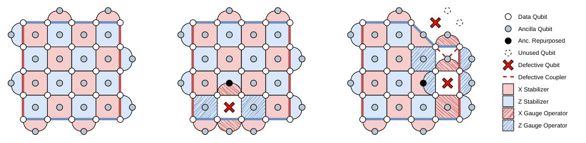
<figcaption class="paper-figure-caption"><b>Fig 1.</b> Fig. 1. (left) Distance-5 rotated surface code with d2 data qubits and d2 −1 ancilla qubits which measure X- and Z-type stabilizers. (middle) Surface code under the presence of 1% defect rate, with a defective ancilla qubit, necessitating two super-stabilizers (one X, one Z) to obtain the syndrome. (right) Surface code under the presence of 2% defect rate, with one defective ancilla, one defective data qubit, and two defective couplers.</figcaption>
</figure>
<figure class="paper-figure-card">
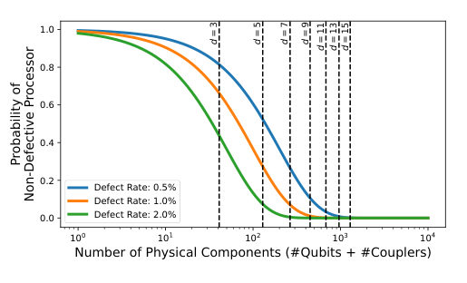
<figcaption class="paper-figure-caption"><b>Fig 2.</b> Fig. 2. Probability of obtaining a non-defective processor as a function of the total number of components, for hardware defect rates of 0.5%, 1% and 2%. Vertical dashed lines mark the component counts corresponding to representative code distances.</figcaption>
</figure>
<figure class="paper-figure-card">
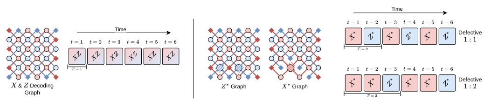
<figcaption class="paper-figure-caption"><b>Fig 3.</b> Fig. 3. (left) The X &amp; Z decoding graph for the left patch depicted in Figure 1. Circular nodes represent bulk stabilizer nodes and diamond nodes represent boundary nodes. With no defects, both the X and the Z stabilizers are measured in every round. (right) The Z∗and X∗decoding graphs for the two alternating syndrome extraction rounds of the middle patch in Figure 1, where hatched nodes mark defective stabilizers. The non-defective X and Z stabilizers are measured in every round, while the X and Z super-stabilizers of the defective surface code are interleaved according to the scheduling ratio RX:RZ.</figcaption>
</figure>
<figure class="paper-figure-card">
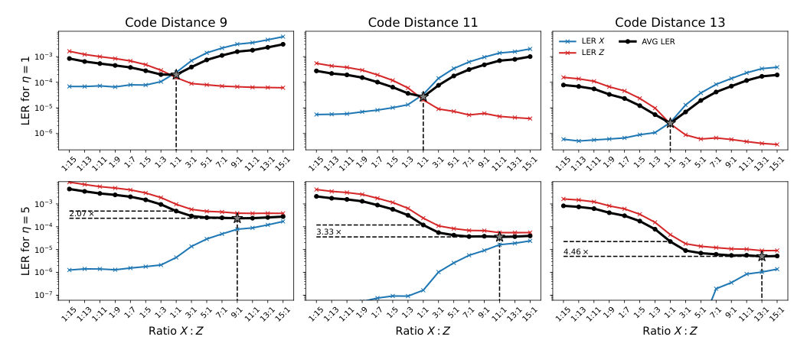
<figcaption class="paper-figure-caption"><b>Fig 4.</b> Fig. 4. Logical error rate for defective systems (dr = 1%) for a logical qubit prepared in the X basis (blue) and the Z basis (red), across different scheduling ratios (RX:RZ), for code distances d ∈{9, 11, 13}. The solid black line shows the average of the two bases. Under symmetric noise (top row), the optimum schedule is RX:RZ = 1:1; under Z-biased noise (bottom row), it shifts towards larger RX.</figcaption>
</figure>
<figure class="paper-figure-card">
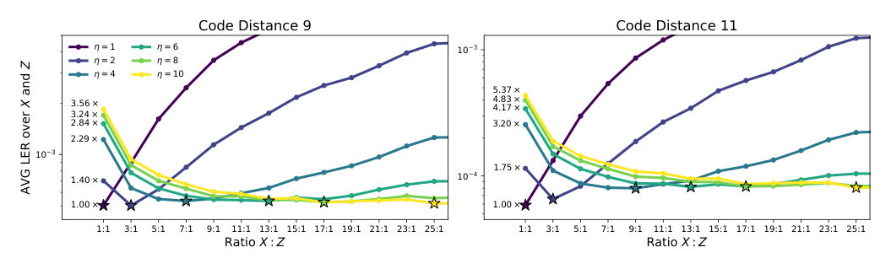
<figcaption class="paper-figure-caption"><b>Fig 5.</b> Fig. 5. Average logical error rate as a function of the scheduling ratio R, for code distances 9 and 11 in systems with increasing bias from η = 1 to η = 10 (dr = 1%). The optimum schedule moves towards larger RX:RZ as η increases, and its improvement over RX:RZ = 1:1 grows with bias.</figcaption>
</figure>
</div>

<p><strong>Summary.</strong> This paper analyzes the optimal timing ratio for performing X-type versus Z-type syndrome measurements in surface codes built on imperfect hardware. By tailoring this measurement schedule according to the underlying noise bias, the authors demonstrate substantial reductions in the logical error rate. This work provides a practical guide for quantum hardware manufacturers to maximize performance without exhaustive simulation.</p>
<p><strong>Why it may be interesting.</strong> While focused on QEC theory, understanding how measurement scheduling mitigates correlated errors (like those induced by defects or crosstalk) provides insights into error management in complex quantum hardware architectures relevant to AMO platforms.</p>
<details>
<summary>Detailed structure</summary>
<p><strong>Main problem.</strong> The study investigates optimizing the scheduling ratio between X-type and Z-type syndrome measurements in surface codes that are adapted to function despite hardware defects.</p>
<p><strong>Main result.</strong> Optimal scheduling ratios, which depend on the noise bias, can significantly reduce the logical error rate by factors up to 8.46x compared to uniform scheduling, even when considering crosstalk effects.</p>
<p><strong>Method.</strong> The authors use extensive numerical simulations based on a circuit-level noise model to characterize how varying the X:Z measurement round ratio impacts the overall logical error rate (LER).</p>
<p><strong>Model / system.</strong> The physical system is the Surface Code, a leading candidate for Fault-Tolerant Quantum Computing. It is modeled as being implemented on hardware containing stochastic defects and operating under biased noise conditions.</p>
<p><strong>Key observables.</strong> Logical Error Rate (LER), $    ext{LER}_X$, and $  ext{LER}_Z$.</p>
<p><strong>Important parameters / regimes.</strong> Noise bias ($\eta = p_Z/p_X$), code distance ($d$), defect rate, and the X-to-Z scheduling ratio ($R_X:R_Z$).</p>
<p><strong>Assumptions / limitations.</strong> The analysis assumes that defects necessitate alternating X/Z measurements (Snakes and Ladders framework) and focuses on the low-to-moderate bias regime.</p>
<p><strong>Figures summary.</strong> Figures illustrate surface code patches with varying defect rates, show components like data qubits and defective couplers, and depict decoding graphs showing interleaved X and Z super-stabilizers based on the scheduling ratio.</p>
<p><strong>Paper structure.</strong> The paper systematically investigates the optimal $X$-to-$Z$ check round-scheduling ratio under biased noise for defect-adapted surface codes. It develops methods to determine this optimum from calibration data, quantifies the LER reduction achieved by optimizing the schedule, and extends these findings to crosstalk-dominated architectures.</p>
</details>
<details>
<summary>Abstract</summary>
<p>Fault-tolerant Quantum Computing (FTQC) relies on Quantum Error Correction (QEC) codes that encode logical qubits across many physical qubits to detect and correct errors. The surface code is among the most widely studied codes due to its high error threshold, the existence of efficient decoders, and hardware-friendly properties: a planar, two-dimensional layout with nearest-neighbor connectivity. In practice, however, the fabrication of solid-state quantum processors introduces hardware defects, resulting in defective qubits and couplers that must be discarded. Adapting the surface code to these defects often requires measuring the $X$- and $Z$-type checks in separate rounds rather than simultaneously. In this work, we investigate the optimal $X$-to-$Z$ checks round-scheduling ratio under biased noise systems. Our results characterize how key architectural parameters, such as noise bias, code distance, and defect rate, impact the logical error rate. We provide insights into how to determine the optimal scheduling ratio directly from device calibration data, enabling manufacturers to maximize performance without extensive simulations. Our approach reduces the logical error rate by up to $4.25\times$ at a $1\%$ defect rate and up to $8.46\times$ at a $2\%$ defect rate for a distance-$13$ surface code under moderately biased noise. Furthermore, we demonstrate that the benefits of round-scheduling extend beyond the defective-hardware setting. In biased-noise architectures subject to CNOT crosstalk, separating $X$ and $Z$ measurement rounds yields up to $4.5\times$ reduction in logical error rate.</p>
</details>
<p><sub><a href="#top">↑ back to top</a></sub></p>

<p><a id="paper-2608.05473"></a></p>
<h3 id="surviving-correlations-across-a-horizon-reflected-entropy-for-bosonic-fields-in-non-inertial-frames-and-black-hole-spacetimes"><a href="http://arxiv.org/abs/2608.05473v1">Surviving correlations across a horizon: reflected entropy for bosonic fields in non-inertial frames and black hole spacetimes</a></h3>
<p><strong>Authors:</strong> Sayid Mondal<br>
<strong>Type:</strong> theory · <strong>Category:</strong> other · <strong>PDF:</strong> <a href="https://arxiv.org/pdf/2608.05473v1">https://arxiv.org/pdf/2608.05473v1</a><br>
<strong>Analysis basis:</strong> full PDF text, analyzed in chunks
<strong>Topic relevance:</strong> 🔥 <code>entanglement &amp; information structure</code> <strong>4/5</strong> · <code>non-equilibrium dynamics</code> <strong>2/5</strong> · <code>Keldysh / 2PI / non-Gaussian methods</code> <strong>1/5</strong> · <code>correlated / nonlocal dissipation</code> <strong>1/5</strong> · <code>driven-dissipative phase transition</code> <strong>1/5</strong> · <code>methods for driven-dissipative</code> <strong>1/5</strong> · <code>non-equilibrium universality</code> <strong>1/5</strong></p>
<div class="figure-strip-hint">↔ Scroll figures horizontally</div>
<div class="paper-figures-scroll">
<figure class="paper-figure-card">
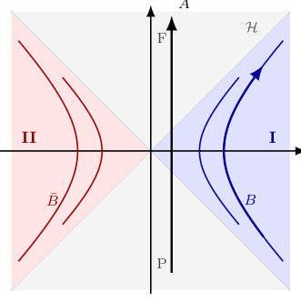
<figcaption class="paper-figure-caption"><b>Fig 1.</b> FIG. 1: Minkowski spacetime in Rindler coordinates. The lightlike lines x = ±t form the Rindler horizon H, dividing space into the right (I) and left (II) wedges. A uniformly accelerated observer, Bob (B), follows a hyperbola x2 −t2 = const (blue) confined to region I; the causally disconnected region II defines anti-Bob ( ¯B). The observer Alice (A) is inertial. P and F denote the past and future Rindler wedges respectively.</figcaption>
</figure>
<figure class="paper-figure-card">
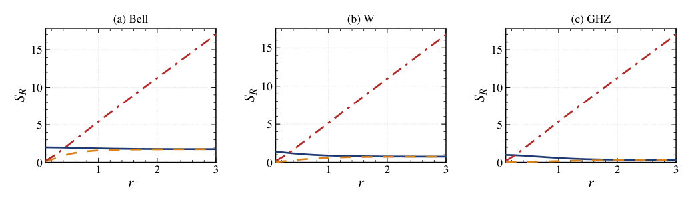
<figcaption class="paper-figure-caption"><b>Fig 2.</b> FIG. 2: Reflected entropy of the three pairings as a function of the squeezing parameter r, for (a) the Bell, (b) the W and (c) the GHZ state, at α = 1/ √</figcaption>
</figure>
<figure class="paper-figure-card">
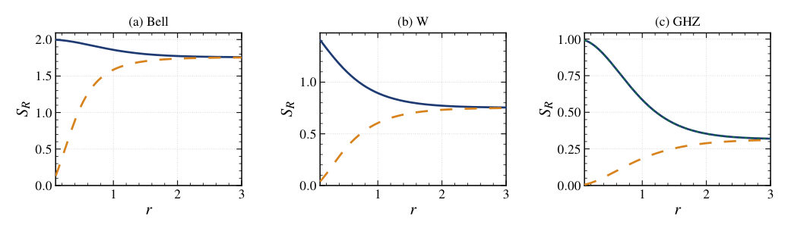
<figcaption class="paper-figure-caption"><b>Fig 3.</b> FIG. 3: Saturation of the reflected entropy for the two Alice pairings a function of the squeezing parameter r, for (a) Bell, (b) W and (c) GHZ, with the same parameters as Fig. 2. The two curves are: SR(A : B) (solid blue) and SR(A : ¯B) (orange dashed).</figcaption>
</figure>
<figure class="paper-figure-card">
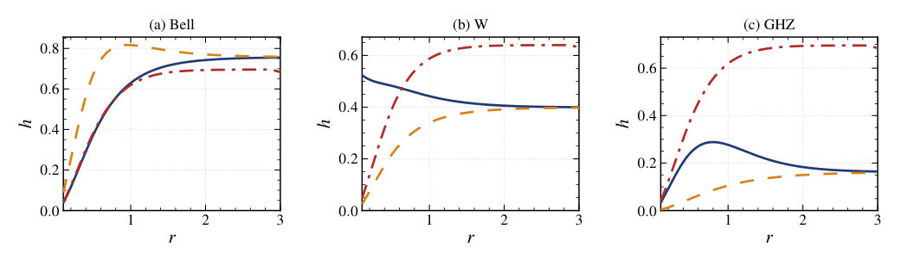
<figcaption class="paper-figure-caption"><b>Fig 4.</b> FIG. 4: The Markov gap h for the three pairings as a function of r, for (a) Bell, (b) W and (c) GHZ, with the same parameters as Fig. 2. The three curves are: h(A:B) (blue solid), h(A: ¯B) (orange dashed), and h(B: ¯B) (red dot-dashed).</figcaption>
</figure>
</div>

<p><strong>Summary.</strong> This paper analyzes residual quantum correlations in bosonic fields across spacetime horizons using reflected entropy. It demonstrates that while standard entanglement decays, a specific measure of correlation saturates to a non-zero floor, retaining classical structure. The findings are directly applicable to black hole physics, providing insights into information retention near event horizons.</p>
<p><strong>Why it may be interesting.</strong> This work provides a sophisticated tool (reflected entropy) to quantify correlations that persist beyond simple entanglement measures in highly curved or accelerating spacetimes, which is crucial for understanding Hawking radiation and quantum information near horizons.</p>
<details>
<summary>Detailed structure</summary>
<p><strong>Main problem.</strong> The study investigates how quantum correlations, measured by reflected entropy, survive across horizons or causal boundaries for bosonic fields in non-inertial frames and black hole spacetimes.</p>
<p><strong>Main result.</strong> While standard entanglement vanishes asymptotically, the Alice–Bob reflected entropy saturates at a nonzero floor, indicating surviving classical correlation. Furthermore, the inter-wedge reflected entropy exhibits a unique linear divergence with the squeezing parameter for bosons, distinguishing it sharply from fermionic cases.</p>
<p><strong>Method.</strong> The authors employ reflected entropy and the Markov gap as diagnostics, utilizing conserved charges to block-diagonalize reduced density matrices into solvable sectors.</p>
<p><strong>Model / system.</strong> The analysis focuses on a free bosonic field quantized in Rindler coordinates (modeling acceleration) and extends these results to Schwarzschild black hole spacetimes. Key states analyzed include Bell, Werner (W), and GHZ tripartite states.</p>
<p><strong>Key observables.</strong> Reflected Entropy ($S_R$), Markov Gap, saturation floors for correlation measures, and the divergence rate of inter-wedge entropy.</p>
<p><strong>Important parameters / regimes.</strong> Acceleration parameter ($a$) leading to Unruh temperature $T=a/2\pi$, and the Bogoliubov squeezing parameter ($r$).</p>
<p><strong>Assumptions / limitations.</strong> The analysis relies on identifying a conserved charge to reduce infinite-dimensional problems to finite sectors, and it uses single-mode approximations in some contexts.</p>
<p><strong>Figures summary.</strong> Figures illustrate Minkowski spacetime mapped to Rindler coordinates, defining causally disconnected wedges separated by the horizon H. Tables summarize $ ext{SR}(A:B)$ across the Hawking spectrum ($\omega/T_H$) for different quantum states.</p>
<p><strong>Paper structure.</strong> The paper establishes the physical problem using reflected entropy in non-inertial frames (Rindler space), develops the mathematical tools via conserved charges, calculates results for specific tripartite states (Bell, W, GHZ), and finally maps these findings directly to the black hole context.</p>
</details>
<details>
<summary>Abstract</summary>
<p>We study the reflected entropy and the Markov gap for modes of a free bosonic field shared by inertial observers (Alice, Charlie) and a uniformly accelerated one (Bob), for a bipartite Bell state and the tripartite Werner (W) and Greenberger--Horne--Zeilinger (GHZ) states. The bosonic Bogoliubov transformation spans an infinite-dimensional Fock space with an unbounded squeezing parameter unlike the fermionic case. By identifying a conserved charge, we block-diagonalize the reduced density matrices into exact two-dimensional sectors, yielding closed or semi-analytic forms for all three states. Although bosonic entanglement is known to vanish asymptotically, the Alice--Bob reflected entropy instead saturates at a nonzero saturation floor, retaining the surviving classical correlation, and converges to the value Alice shares with Bob's causally disconnected partner. Crucially, only the inter-wedge reflected entropy diverges, linearly in the squeezing parameter---the sharp distinction from the fermionic case, where it stays bounded---while the Markov gaps saturate. The construction transfers verbatim to a Schwarzschild black hole, where the saturation values become mass-independent constants.</p>
</details>
<p><sub><a href="#top">↑ back to top</a></sub></p>

<p><a id="paper-2608.05753"></a></p>
<h3 id="the-locality-gap-a-thermodynamic-law-for-objective-facts"><a href="http://arxiv.org/abs/2608.05753v1">The Locality Gap: A Thermodynamic Law for Objective Facts</a></h3>
<p><strong>Authors:</strong> Maxim V. Churilov<br>
<strong>Type:</strong> theory · <strong>Category:</strong> statistical mechanics · <strong>PDF:</strong> <a href="https://arxiv.org/pdf/2608.05753v1">https://arxiv.org/pdf/2608.05753v1</a><br>
<strong>Analysis basis:</strong> full PDF text, analyzed in chunks
<strong>Topic relevance:</strong> 🔥 <code>entanglement &amp; information structure</code> <strong>4/5</strong> · <code>non-equilibrium dynamics</code> <strong>2/5</strong> · <code>Keldysh / 2PI / non-Gaussian methods</code> <strong>1/5</strong> · <code>correlated / nonlocal dissipation</code> <strong>1/5</strong> · <code>driven-dissipative phase transition</code> <strong>1/5</strong> · <code>methods for driven-dissipative</code> <strong>1/5</strong> · <code>non-equilibrium universality</code> <strong>1/5</strong></p>
<div class="figure-strip-hint">↔ Scroll figures horizontally</div>
<div class="paper-figures-scroll">
<figure class="paper-figure-card">
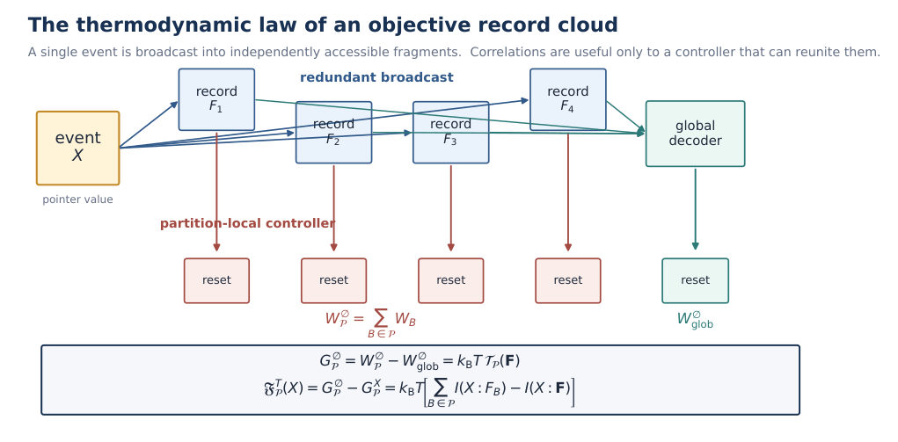
<figcaption class="paper-figure-caption"><b>Fig 1.</b> FIG. 1. Operational setting. An event X is broadcast into a record cloud F = F1 · · · FR. A partition-local controller resets each allowed block independently, whereas a global controller first exploits cross-block correlations. Their work difference is the locality gap G∅ P. Repeating both tasks with X supplied as catalytic classical side information gives GX P ; the double difference is the thermodynamic factuality charge equation (1).</figcaption>
</figure>
<figure class="paper-figure-card">
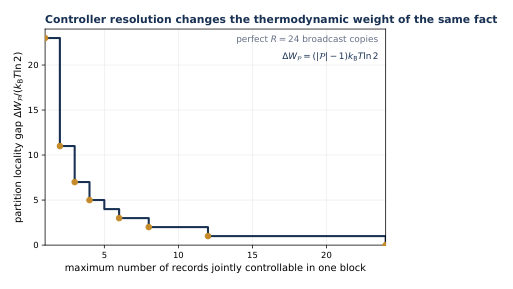
<figcaption class="paper-figure-caption"><b>Fig 2.</b> FIG. 2. Controller-scale flow for 24 perfect records of one bit. If at most b records can be jointly processed, the minimum number of blocks is ⌈24/b⌉, and the locality gap is (⌈24/b⌉− 1)kBT ln 2.</figcaption>
</figure>
<figure class="paper-figure-card">
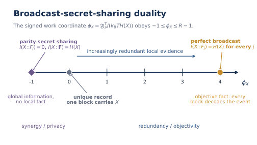
<figcaption class="paper-figure-caption"><b>Fig 3.</b> FIG. 3. The normalized factuality charge distinguishes redun- dant evidence from synergistic encoding. For R = 5 blocks, perfect broadcast saturates ϕX = 4, unique storage gives 0, and parity secret sharing saturates −1.</figcaption>
</figure>
<figure class="paper-figure-card">
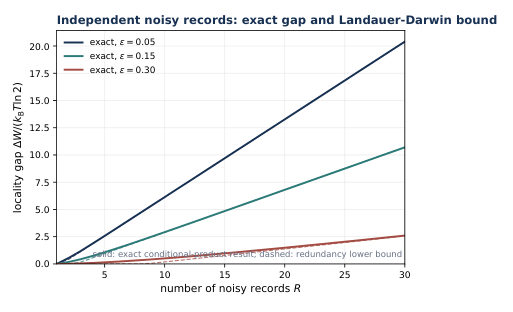
<figcaption class="paper-figure-caption"><b>Fig 4.</b> FIG. 4. Exact factuality/locality gap for independent binary- symmetric records. Solid curves show equation (45); dashed curves show the lower bound obtained by replacing I(X:F1:R) with H(X) = ln 2.</figcaption>
</figure>
<figure class="paper-figure-card">
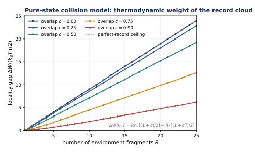
<figcaption class="paper-figure-caption"><b>Fig 5.</b> FIG. 5. Exact source-loss charge for the pure-state collision model. The dashed ceiling is perfect one-bit broadcasting, (R −1)kBT ln 2.</figcaption>
</figure>
</div>

<p><strong>Summary.</strong> This paper introduces the 'thermodynamic factuality charge' as a quantifiable resource associated with redundant environmental records in Quantum Darwinism. By analyzing the difference in minimum work required for local versus global erasure, it establishes that this charge measures how much information is redundantly encoded across accessible fragments. This provides a novel thermodynamic law connecting quantum correlations to physical constraints.</p>
<p><strong>Why it may be interesting.</strong> It provides a rigorous thermodynamic measure for quantum redundancy that goes beyond simple entropy measures, linking fundamental concepts of quantum information (like correlations) directly to measurable work costs at finite temperature.</p>
<details>
<summary>Detailed structure</summary>
<p><strong>Main problem.</strong> To establish a universal thermodynamic signature that quantifies 'factuality' or objective information content arising from redundant records in an environment, extending concepts from Quantum Darwinism.</p>
<p><strong>Main result.</strong> The paper derives the 'thermodynamic factuality charge,' $\mathcal{F}_T^P$, which is proportional to $k_B T$ times a specific combination of mutual information terms. This charge quantifies the thermodynamic resource generated by redundant records under restricted control, ranging between bounds set by secret sharing and perfect broadcasting.</p>
<p><strong>Method.</strong> The analysis uses work-extraction principles, comparing minimum work costs for local versus global erasure/resetting tasks on a 'record cloud' $F$. The core diagnostic is derived from differences in free energy or work ($\Delta W$), leading to information-theoretic expressions involving mutual information and entropy.</p>
<p><strong>Model / system.</strong> The system models objective facts as a 'record cloud' $F$ resulting from an event $X$, which is partitioned into blocks $\mathcal{P}$. The framework applies concepts of quantum information theory (mutual information, total correlation) within a thermodynamic context involving work costs at temperature $T$.</p>
<p><strong>Key observables.</strong> Thermodynamic factuality charge ($\mathcal{F}_T^P$), Locality Gap ($G_X^P$), Normalized thermodynamic record number ($   ilde{N}_P^X$).</p>
<p><strong>Important parameters / regimes.</strong> $k_B T$ (thermal energy scale), $H(X)$ (source entropy), $|\mathcal{P}|$ (number of blocks).</p>
<p><strong>Assumptions / limitations.</strong> The work identities are derived within a 'deliberately explicit reset model.' The theory does not modify quantum mechanics or posit objective collapse.</p>
<p><strong>Figures summary.</strong> Figure 1 illustrates the operational setting by comparing work costs for partition-local vs. global resets ($G_\emptyset^P$) and source-assisted versions ($G_X^P$).</p>
<p><strong>Paper structure.</strong> The paper progresses by defining the problem using work asymmetries (locality gap), deriving the central 'thermodynamic factuality charge' ($\mathcal{F}_T^P$), establishing its bounds based on information theory, and applying it to specific physical scenarios like perfect broadcasting.</p>
</details>
<details>
<summary>Abstract</summary>
<p>Objective facts in quantum Darwinism are values recorded redundantly in many independently accessible fragments of the environment. Redundancy does not create additional logical information, so its thermodynamic meaning has remained unclear. We show that it creates an exact work asymmetry between controllers with different access architectures. For a record cloud $F$ and a partition $\mathcal{P}$ into blocks that cannot be jointly controlled, the reversible isothermal erasure penalty relative to a global controller is $k_{\mathrm{B}}T$ times the partition total correlation. If the source event $X$ is supplied as catalytic classical side information, subtracting the corresponding penalty gives the source-loss law $\mathcal{F}_{\mathcal{P}}^{T}=k_{\mathrm{B}}T\left[\sum_{B\in\mathcal{P}}I(X{:}F_B)-I(X{:}F)\right]$. We call this the thermodynamic factuality charge. It ranges from $-k_{\mathrm{B}}T H(X)$ for perfect secret sharing to $(|\mathcal{P}|-1)k_{\mathrm{B}}T H(X)$ for perfect broadcast objectivity. Its normalized form defines a thermodynamic record number between $0$ and $|\mathcal{P}|$. We derive Landauer--Darwin bounds, endpoint-rigidity certificates, exact growth and partition-refinement laws, spectrum-broadcast saturation, and closed formulas for noisy classical and quantum collision models. The theory does not modify quantum mechanics or posit objective collapse; it identifies the thermodynamic resource generated by redundant records under restricted control.</p>
</details>
<p><sub><a href="#top">↑ back to top</a></sub></p>

<p><a id="paper-2608.05290"></a></p>
<h3 id="exact-statistical-transmutation-of-quantum-mixtures-on-a-ring"><a href="http://arxiv.org/abs/2608.05290v1">Exact statistical transmutation of quantum mixtures on a ring</a></h3>
<p><strong>Authors:</strong> Wayne J. Chetcuti, Nathan Goldman, Patrizia Vignolo, Anna Minguzzi<br>
<strong>Type:</strong> theory · <strong>Category:</strong> quantum gases · <strong>PDF:</strong> <a href="https://arxiv.org/pdf/2608.05290v1">https://arxiv.org/pdf/2608.05290v1</a><br>
<strong>Analysis basis:</strong> full PDF text, analyzed in chunks
<strong>Topic relevance:</strong> 🔥 <code>analog quantum simulation</code> <strong>4/5</strong> · <code>non-equilibrium dynamics</code> <strong>2/5</strong> · <code>Keldysh / 2PI / non-Gaussian methods</code> <strong>1/5</strong> · <code>driven-dissipative phase transition</code> <strong>1/5</strong> · <code>entanglement &amp; information structure</code> <strong>1/5</strong></p>
<div class="figure-strip-hint">↔ Scroll figures horizontally</div>
<div class="paper-figures-scroll">
<figure class="paper-figure-card">
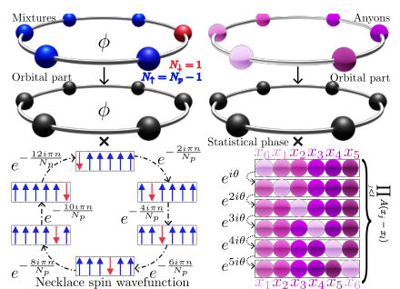
<figcaption class="paper-figure-caption"><b>Fig 1.</b> FIG. 1. Scheme illustrating emerging anyonic exchange phases in single-impurity quantum mixtures. A repulsively interacting two-component mixture with Np = 6 particles pierced by an effective flux ϕ decouples into a spinless or- bital part and a necklace spin wavefunction. The latter is constructed from cyclic translations of the impurity, with the j-th configuration acquiring a phase e−i2πnj/Np. In the any- onic case, the same orbital structure is instead dressed by the statistical factor Q</figcaption>
</figure>
<figure class="paper-figure-card">
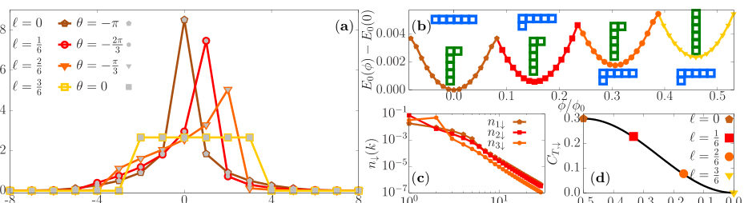
<figcaption class="paper-figure-caption"><b>Fig 2.</b> FIG. 2. Momentum distributions of mixtures and anyons. (a) Impurity momentum distribution n↓(k) as a function of wavevector k, in units of 1/L and 2π/L respectively, for fermionic mixtures with Np = 6 particles on a ring of length L. The colored curves show the exact results obtained from Eq. (8) for different angular momenta ℓ, while the gray symbols denote the corresponding anyonic distributions at the indicated statistical angles θ, calculated from Eq. (7). (b) Ground-state energy E0(ϕ)−E0(0), in units of J, versus the flux ϕ/ϕ0 obtained by exact diagonalization of the Fermi–Hubbard model with U = 500J, where U is the on-site interaction and J is the hopping amplitude, together with the...</figcaption>
</figure>
<figure class="paper-figure-card">

<figcaption class="paper-figure-caption"><b>Fig 3.</b> FIG. 3. Dynamical anyonization. Time evolved momentum distribution n↓(k) in units of 1/L as a function of the wavevector k in units of 2π/L under the symmetry-breaking protocol, following a sudden quench of the flux from ϕ/ϕ0 =0 to ϕ/ϕ0 =1/12 at selected times τ. During the dynamics, the momentum distribution oscillates from the bosonic one (a) with angular momentum ℓ= 0 to the anyonic one (e) with ℓ= 1/6 , recovering its bosonized profile in (g). Intermediate times (b)-(d) and (f) depict hybridized contributions from both states. Black dotted lines are the ground-state momentum distributions profiles for ℓ= 0 in (a) and (g), and ℓ= 1/6 in (e). Results obtained from exact diagonalization of...</figcaption>
</figure>
<figure class="paper-figure-card">

<figcaption class="paper-figure-caption"><b>Fig 4.</b> FIG. 4. One-particle wavefunction for the impurity in the fermionic mixture. Real and imaginary parts of the one-particle wavefunction Ψ(x) plotted as functions of the impurity position x around the ring for different angular momenta per particle ℓ, with the Np−1 spin-up particle coordinates fixed to {r2, r3, r4, r5, r6} = {3, 8, 12, 17, 22}. The wavefunctions are obtained from Eq. (S.2) using the spin amplitudes in Eq. (S.3) for the Heisenberg eigenstate selected at each ℓ. Panels (a)-(d) correspond to (ℓ, n)=(0,3),(1/6,2), (2/6,1), and (3/6,0), respectively and hence to the Fermi-mapped statistical angles θ = −π, −2π/3, −π/3 and 0. Panels (a) and (d) display the bosonized and fermionized...</figcaption>
</figure>
<figure class="paper-figure-card">

<figcaption class="paper-figure-caption"><b>Fig 5.</b> FIG. 5. Anyonization of multi-component mixtures with an even particle number. Component-resolved momentum distributions n↑(k) and n↓(k), in units of 1/L, for a mixture of N↑= 5 spin-up and N↓= 1 spin-down particles. The wavevector k is expressed in units of 2π/L. The top two rows correspond to fermionic mixtures and the bottom two to bosonic mixtures; within each pair, the upper and lower rows show n↑(k) and n↓(k), respectively. From left to right, the columns correspond to angular momenta per particle ℓ= 0, 1/6, 2/6, and 3/6, calculated using Eq. (S.36). The black curves show the corresponding anyonic momentum distributions, obtained via Eq. (S.10) using the respective Fermi- or...</figcaption>
</figure>
</div>

<p><strong>Summary.</strong> This paper theoretically proves that one-dimensional, strongly interacting quantum mixtures on a ring can exhibit exact anyonic exchange statistics. By analyzing the momentum distribution and energy response to an applied magnetic flux, the authors establish a direct link between spin/orbital degrees of freedom and fractionalized statistics. This work suggests a pathway for realizing and manipulating anyon states using ultracold atomic gases.</p>
<p><strong>Why it may be interesting.</strong> This work provides concrete theoretical predictions—measurable via ultracold atoms—for observing fractional exchange statistics (anyonization) in controllable quantum gas setups by manipulating artificial gauge fields.</p>
<details>
<summary>Detailed structure</summary>
<p><strong>Main problem.</strong> The study demonstrates the exact statistical transmutation of quantum mixtures on a ring, showing that their exchange statistics can be anyonic.</p>
<p><strong>Main result.</strong> The wavefunction exhibits exact anyonic statistics upon particle exchange, and this signature is directly encoded in the momentum distribution tails and persistent current measurements.</p>
<p><strong>Method.</strong> The analysis uses Bethe Ansatz techniques (necklace Ansatz) to construct wavefunctions for strongly repulsive mixtures and maps these results onto theoretical descriptions of hard-core anyons.</p>
<p><strong>Model / system.</strong> The system models one-dimensional, strongly repulsive quantum mixtures confined to a ring threaded by an artificial gauge field. The Hamiltonian includes both orbital and spin degrees of freedom, allowing for the study of Fermi-Fermi and Bose-Bose analogues.</p>
<p><strong>Key observables.</strong> Momentum distribution $n_\downarrow(k)$, energy spectrum $E_0(\phi)$ vs flux $\phi$, and persistent current $I(\phi)$.</p>
<p><strong>Important parameters / regimes.</strong> Strongly repulsive limit, artificial gauge field flux ($\phi$), particle number parity ($N_p$).</p>
<p><strong>Assumptions / limitations.</strong> The analysis relies on the strongly repulsive limit where spin and orbital degrees of freedom can be decoupled for exact solutions.</p>
<p><strong>Figures summary.</strong> Figures illustrate wavefunction construction via necklaces; momentum distributions compare impurity results to anyonic predictions, showing characteristic tails; energy spectra show flux periodicity changes; and time-evolved simulations demonstrate coherent dynamics during a quench protocol.</p>
<p><strong>Paper structure.</strong> The paper progresses from establishing the general model Hamiltonian and using the necklace Ansatz for exact solutions in the single-impurity limit. It then compares these results to theoretical anyon models, analyzing momentum distributions and energy spectra across different flux values before concluding with a dynamical quench protocol.</p>
</details>
<details>
<summary>Abstract</summary>
<p>One-dimensional strongly repulsive quantum mixtures exhibit non-trivial exchange statistics arising from the interplay between orbital and spin degrees of freedom. Using an exact solution, we demonstrate that in the single-impurity limit the wavefunction of Fermi-Fermi and Bose-Bose mixtures on a ring threaded by an artificial gauge field display exact anyonic statistics under exchange of the impurity with the majority particles. The resulting fractional exchange phase is fixed by the angular momentum sector selected through the applied flux. We find that the impurity momentum distribution coincide exactly with the anyonic one, independently of the bosonic or fermionic nature of the mixture, with the large-momentum tails encoding a direct signature of the anyonic statistical angle. Finally, we devise a quench protocol for reversible dynamical anyonization. Our results provide a path for realizing and manipulating anyonized states with ultracold atoms.</p>
</details>
<p><sub><a href="#top">↑ back to top</a></sub></p>

<p><a id="paper-2608.06318"></a></p>
<h3 id="breaking-memory-bottlenecks-in-quantum-control-systems-for-more-precise-experiments-and-higher-throughput-computing"><a href="http://arxiv.org/abs/2608.06318v1">Breaking Memory Bottlenecks in Quantum Control Systems for More Precise Experiments and Higher Throughput Computing</a></h3>
<p><strong>Authors:</strong> Yicheng Guang, Neel Vora, Yilun Xu, Yueqi Chen, Gang Huang<br>
<strong>Type:</strong> experiment · <strong>Category:</strong> quantum information and computing · <strong>PDF:</strong> <a href="https://arxiv.org/pdf/2608.06318v1">https://arxiv.org/pdf/2608.06318v1</a><br>
<strong>Analysis basis:</strong> full PDF text, analyzed in chunks
<strong>Topic relevance:</strong> 🔥 <code>QC/QI experiment</code> <strong>4/5</strong> · <code>quantum measurements</code> <strong>2/5</strong> · <code>methods for driven-dissipative</code> <strong>1/5</strong> · <code>non-equilibrium dynamics</code> <strong>1/5</strong></p>
<div class="figure-strip-hint">↔ Scroll figures horizontally</div>
<div class="paper-figures-scroll">
<figure class="paper-figure-card">

<figcaption class="paper-figure-caption"><b>Fig 1.</b> Fig. 1: Ant-Q transforms the workflow of quantum control systems. In the pipeline workflow of Ant-Q, circuit loading, execution, and readout uplink are decoupled and overlapped in time. As a result, readout data can be uplinked shortly after execution begins.</figcaption>
</figure>
<figure class="paper-figure-card">

<figcaption class="paper-figure-caption"><b>Fig 2.</b> Fig. 2: Design overview for Ant-Q.</figcaption>
</figure>
<figure class="paper-figure-card">

<figcaption class="paper-figure-caption"><b>Fig 3.</b> Fig. 3: Design details for Ant-Q downlink part.</figcaption>
</figure>
<figure class="paper-figure-card">

<figcaption class="paper-figure-caption"><b>Fig 4.</b> Fig. 4: Design details for Ant-Q uplink part.</figcaption>
</figure>
<figure class="paper-figure-card">

<figcaption class="paper-figure-caption"><b>Fig 5.</b> Fig. 5: Early-stop effectiveness on the six noise-dominated circuits from Table 5. Each bar is normalized to the circuit’s original shot budget (100%, gray). The blue segment marks the stop threshold of the original shots, while the orange segment shows the actual number of shots executed after stop mechanism fired.</figcaption>
</figure>
</div>

<p><strong>Summary.</strong> The paper introduces Ant-Q, a novel memory hierarchy designed for quantum control systems to overcome severe bottlenecks caused by limited on-chip memory and slow data transfer. By implementing a pipelined workflow that overlaps circuit loading with execution, Ant-Q significantly boosts system throughput and allows for the running of much deeper and more complex quantum experiments.</p>
<p><strong>Why it may be interesting.</strong> This work directly addresses the classical control layer required to run complex quantum algorithms, which is crucial context for any theoretical physicist designing or simulating quantum hardware experiments.</p>
<details>
<summary>Detailed structure</summary>
<p><strong>Main problem.</strong> The development of precise quantum experiments and high-throughput quantum computation is limited by a memory bottleneck within the classical quantum control system layer.</p>
<p><strong>Main result.</strong> The proposed Ant-Q memory hierarchy design successfully transforms the inefficient 'punched-card' workflow into a pipelined architecture, reducing I/O overhead to near zero and enabling deep circuit execution.</p>
<p><strong>Method.</strong> Ant-Q integrates DRAM with BRAM on the control board to create a pipeline that overlaps data loading, quantum circuit execution, and result readout, bypassing sequential bottlenecks.</p>
<p><strong>Model / system.</strong> The work focuses on optimizing FPGA-based quantum control systems (like QubiC 3.0) which interface classical processing units with Quantum Processing Units (QPUs). The system architecture involves managing data flow between DRAM (large capacity) and BRAM (fast cache) on the Programmable Logic.</p>
<p><strong>Key observables.</strong> Overhead reduction percentage relative to execution time, support for deep Randomized Benchmarking circuits, and overall batch throughput improvement.</p>
<p><strong>Important parameters / regimes.</strong> BRAM capacity limits ($\le 2048$ commands), DRAM non-deterministic latency (refresh cycles), and the comparison between old vs. new system overheads.</p>
<p><strong>Assumptions / limitations.</strong> The primary bottleneck is memory structure; future work plans include bypassing the PS-to-host link and implementing predictive preloading for cross-buffer jumps.</p>
<p><strong>Figures summary.</strong> Figures illustrate the transformation from a sequential 'Punched-Card workflow' to an overlapped, pipelined workflow in Ant-Q, detailing data paths and buffer usage.</p>
<p><strong>Paper structure.</strong> The paper identifies the memory bottleneck, proposes the Ant-Q memory hierarchy integrating DRAM/BRAM for pipelining, evaluates its performance using real-world circuits (RB), quantifies overhead reduction, and discusses future scaling limitations.</p>
</details>
<details>
<summary>Abstract</summary>
<p>As quantum computing continues to demonstrate promise and attract growing attention, there is an increasing need for more precise experiments to advance the development of quantum devices, as well as higher circuit throughput to validate more domain applications. However, this need is hindered by a memory bottleneck at the quantum control system layer, arising from limited on-chip BRAM capacity and the non-deterministic latency of DRAM. To break this bottleneck, we present Ant-Q, a memory hierarchy design that integrates DRAM with BRAM to support pipelined quantum circuit execution while ensuring deterministic inter-circuit timing. We evaluated Ant-Q using 26 real-world experimental and computing circuits. The results show that Ant-Q supports deep circuits for 1Q and 2Q Randomized Benchmarking and reduces the overhead of circuit loading and readout uplink relative to execution time from 22.90%-1417.05% to near zero. Ant-Q is being integrated into QubiC 3.0, with part of its functionalities already available.</p>
</details>
<p><sub><a href="#top">↑ back to top</a></sub></p>

<p><a id="paper-2608.05722"></a></p>
<h3 id="entanglement-scaling-and-full-counting-statistics-in-excited-states-of-two-dimensional-rotating-fermions"><a href="http://arxiv.org/abs/2608.05722v1">Entanglement Scaling and Full Counting Statistics in Excited States of Two-Dimensional Rotating Fermions</a></h3>
<p><strong>Authors:</strong> Priyangshu Goswami, Abhishek Dhar, Satya N. Majumdar, Anupam Kundu<br>
<strong>Type:</strong> theory · <strong>Category:</strong> statistical mechanics · <strong>PDF:</strong> <a href="https://arxiv.org/pdf/2608.05722v1">https://arxiv.org/pdf/2608.05722v1</a><br>
<strong>Analysis basis:</strong> full PDF text, analyzed in chunks
<strong>Topic relevance:</strong> 🔥 <code>entanglement &amp; information structure</code> <strong>4/5</strong> · <code>analog quantum simulation</code> <strong>1/5</strong> · <code>non-equilibrium dynamics</code> <strong>1/5</strong></p>
<div class="figure-strip-hint">↔ Scroll figures horizontally</div>
<div class="paper-figures-scroll">
<figure class="paper-figure-card">

<figcaption class="paper-figure-caption"><b>Fig 1.</b> FIG. 1. For the excited state Ψ(M,M+N) , the fermions are mostly confined uniformly in the blue coloured region where r ∈ √</figcaption>
</figure>
<figure class="paper-figure-card">

<figcaption class="paper-figure-caption"><b>Fig 2.</b> FIG. 2. Radial density profile ρ(r) for excited states with µ = M/N = 9/16 and N = 400, 1600, 6400. Scatter points represent the exact expression in Eq. (19) while the solid lines represent the approximation in Eq. (24). The approximation reproduces the uniform bulk density and the edge behaviour quite well.</figcaption>
</figure>
<figure class="paper-figure-card">

<figcaption class="paper-figure-caption"><b>Fig 3.</b> FIG. 3. The upper panel shows the second Rényi entropy S(2) as a function of the rescaled radial coordinate ξ, for several values of (M, N) at fixed µ = 0.225. Linear growth in the bulk region is confirmed by a straight-line fit, with area-law coefficient σ2 = F2(∞) from Eq. (30). The lower panel com- pares the numerically computed ratio S(2) /(2π √</figcaption>
</figure>
<figure class="paper-figure-card">

<figcaption class="paper-figure-caption"><b>Fig 4.</b> FIG. 4. The upper panel shows the variance ⟨ˆ N 2⟩c as a func- tion of the rescaled radial coordinate ξ, for several values of (M, N) at fixed µ = 0.225. Linear growth in the bulk region is confirmed, with area-law coefficient κ2 = j2(∞) = 1 2π3/2 . The lower panel compares the numerically computed ratio ⟨ˆ N 2⟩c/(2π √</figcaption>
</figure>
<figure class="paper-figure-card">

<figcaption class="paper-figure-caption"><b>Fig 5.</b> FIG. 5. A comparison of the second Rényi entropy S(2), as a function of the rescaled radius ξ of the disc region (blue line) with cumulant expansions (Eq. (4)) truncated at orders K = 2 (brown circles) and K = 4 (green circles). The cumulant expansion shows satisfactory convergence to the exact result even at the lowest truncation order K = 2. The inset shows the difference S(2)(K)−S(2)(exact), confirming improvement with increasing K.</figcaption>
</figure>
</div>

<p><strong>Summary.</strong> This work analytically computes the entanglement entropy and full counting statistics for non-interacting fermions in an excited state within a rotating 2D harmonic trap. The authors demonstrate that fundamental scaling laws, such as the area law, remain valid even for these highly excited states. Furthermore, they establish robust additive relations for both entropy and particle number cumulants when analyzing annular subsystems.</p>
<p><strong>Why it may be interesting.</strong> It provides rigorous theoretical confirmation that fundamental scaling laws (like the area law) persist in complex excited states beyond the ground state, linking entanglement structure directly to particle number fluctuations in a controlled quantum setting.</p>
<details>
<summary>Detailed structure</summary>
<p><strong>Main problem.</strong> The study investigates entanglement entropy (EE) and Full Counting Statistics (FCS) for excited states of fermions confined in a rotating trap, specifically testing the validity of area law scaling.</p>
<p><strong>Main result.</strong> The area law scaling holds for EE even in these excited states, and both EE and particle number cumulants exhibit robust additive relations when calculated for an annular region.</p>
<p><strong>Method.</strong> Analytical computation using the overlap matrix formalism, which relates EE and FCS to eigenvalues of correlation matrices derived from non-interacting fermion wavefunctions.</p>
<p><strong>Model / system.</strong> Non-interacting spinless fermions confined in a two-dimensional harmonic trap rotating at an angular frequency $\Omega$. The system is analyzed for excited states constructed by filling consecutive single-particle energy levels (e.g., LLL sector).</p>
<p><strong>Key observables.</strong> Rényi entanglement entropy ($S_q$), particle number cumulants ($\langle\hat{N}_D^p
angle_c$), and the centered cumulant generating function.</p>
<p><strong>Important parameters / regimes.</strong> The angular frequency $\Omega$, the radius $r$ (for discs), and the width of the annulus; analysis is performed in limits where the system size ($M, N$) is large.</p>
<p><strong>Assumptions / limitations.</strong> The fermions are non-interacting. Additivity for annular regions requires the width to be sufficiently large. The calculations often rely on asymptotic approximations derived from integral representations.</p>
<p><strong>Figures summary.</strong> Figures illustrate density profiles and show scaling behavior of Rényi entropy ($S(2)/\sqrt{N}$) across different regimes (inner edge, bulk, outer edge) in rescaled coordinates $\xi$.</p>
<p><strong>Paper structure.</strong> The paper progresses by first establishing the formalism for EE and FCS using correlation matrices. It then calculates these quantities for discs, confirming area law scaling. Subsequently, it extends the analysis to annular regions, demonstrating additive decomposition of both entropy and cumulants.</p>
</details>
<details>
<summary>Abstract</summary>
<p>We investigate the entanglement entropy of a class of $N$-particle excited state of fermions confined in a two-dimensional harmonic trap rotating at an angular frequency $Ω$. The excited state is constructed by filling a particular set of $N$ single-particle energy levels. We analytically compute the Rényi entropies of order $q$ in a disc of radius $r$ around the centre of the trap, and the cumulants corresponding to number fluctuations of fermions within the disc. We found that the area law scaling of entanglement entropy holds even for a class of excited states. We also verified the well-known series expansion of entanglement entropy in terms of the particle number cumulants for non-interacting fermions. We further derive the centered cumulant generating function, demonstrating that the associated probability distribution function in the disc has identical scaling properties, up to a variable shift, to the known ground-state result. Finally, we extend our result to an annular region, showing that both the Rényi entropy and particle number cumulants of the annulus decompose into sums of the corresponding quantities of the two bounding discs. These additive relations hold as long as the width of the annulus is sufficiently large.</p>
</details>
<p><sub><a href="#top">↑ back to top</a></sub></p>

<p><a id="paper-2608.05293"></a></p>
<h3 id="entangling-power-of-neural-networks"><a href="http://arxiv.org/abs/2608.05293v1">Entangling power of neural networks</a></h3>
<p><strong>Authors:</strong> Taige Wang, Nisarga Paul, Liang Fu<br>
<strong>Type:</strong> theory · <strong>Category:</strong> disordered systems and neural networks · <strong>PDF:</strong> <a href="https://arxiv.org/pdf/2608.05293v1">https://arxiv.org/pdf/2608.05293v1</a><br>
<strong>Analysis basis:</strong> full PDF text, analyzed in chunks
<strong>Topic relevance:</strong> 🔥 <code>entanglement &amp; information structure</code> <strong>4/5</strong> · <code>methods for driven-dissipative</code> <strong>1/5</strong></p>
<div class="figure-strip-hint">↔ Scroll figures horizontally</div>
<div class="paper-figures-scroll">
<figure class="paper-figure-card">

<figcaption class="paper-figure-caption"><b>Fig 1.</b> FIG. 1. (Left) The general template for the neural encoder- decoder architecture: the bipartitioned input A|B is encoded by two encoders ϕA,B into a K-dimensional latent space and decoded, or recombined, by g(ϕA, ϕB). When g is simply a bilinear function, this coincides with the Schmidt decom- position for quantum wavefunctions. When g is nonlinear, the neural encoder-decoder architecture can be far more ex- pressive. We quantify this by the entangling power. (Right) Entangling power Ep(K) = K+p p  [Eq. (13)] as a function of latent width K and degree p for polynomial decoders (colour on a logarithmic scale). Along the dotted line p = 1 (labelled Schmidt for bilinear decoders) the...</figcaption>
</figure>
<figure class="paper-figure-card">

<figcaption class="paper-figure-caption"><b>Fig 2.</b> FIG. 2. Polynomial sandwich bound (14) for D = 2n. (Left) At fixed Schmidt rank R = √</figcaption>
</figure>
</div>

<p><strong>Summary.</strong> This paper introduces and quantifies the 'entangling power' of neural networks by analyzing polynomial decoders. It shows that this power, $E_p(K)$, grows combinatorially with latent dimension $K$ and decoder degree $p$. The results provide a powerful tool to bound the complexity of quantum correlations achievable through machine learning models.</p>
<p><strong>Why it may be interesting.</strong> This work provides a rigorous mathematical framework for understanding how much quantum entanglement (a key resource in quantum information) can be encoded or simulated using classical machine learning architectures, which is vital for designing efficient quantum simulation models.</p>
<details>
<summary>Detailed structure</summary>
<p><strong>Main problem.</strong> The paper addresses quantifying the complexity of correlations between subsystems when using neural network representations, moving beyond the limitations of traditional measures like Schmidt rank.</p>
<p><strong>Main result.</strong> It establishes that the entangling power ($E$) of a polynomial decoder is exactly equal to the number of monomials $N_p(K) = inom{K+p}{p}$, demonstrating exponential entanglement generation with modest resources.</p>
<p><strong>Method.</strong> The authors use theoretical bounds derived from linear algebra and polynomial theory, relating the rank of a function to the dimension of the space spanned by its polynomial components.</p>
<p><strong>Model / system.</strong> The model involves representing a correlation function $f(x, y)$ via an encoder-decoder structure: $f(x, y) = g(\phi_A(x), \phi_B(y))$, where $g$ is restricted to be a polynomial of degree $p$.</p>
<p><strong>Key observables.</strong> Entangling Power ($E$), Schmidt Rank ($R$), Latent Space Dimension ($K$), and Decoder Degree ($p$).</p>
<p><strong>Important parameters / regimes.</strong> The relationship between the required minimum latent width ($K_{\min}$), the target rank ($R$), and the decoder degree ($p$) is central, with specific scaling laws provided for different regimes.</p>
<p><strong>Assumptions / limitations.</strong> The analysis focuses specifically on polynomial decoders of a fixed maximum total degree $p$, contrasting this with general nonlinear decoders which require exponentially large complexity.</p>
<p><strong>Figures summary.</strong> Figure 1 illustrates the general encoder-decoder template, comparing bilinear (Schmidt) vs. nonlinear decoding and plotting the entangling power $E_p(K)$. Figure 2 compares the required minimum latent width ($K_{\min}$) for a given Schmidt rank across different decoder degrees.</p>
<p><strong>Paper structure.</strong> The paper introduces the problem of correlation complexity using NNs, derives the definition of entangling power based on polynomial decoders, establishes necessary and sufficient conditions relating rank to $N_p(K)$, and concludes with specific examples like the Bell state.</p>
</details>
<details>
<summary>Abstract</summary>
<p>Characterizing the complexity of correlations between subsystems is a fundamental task across information theory, machine learning, and science. In quantum physics, neural networks have found increasing application in learning wavefunctions. Here we introduce the entangling power of an encoder-decoder neural network, which quantifies its ability to generate entanglement between subsystems, dependent on a latent space dimension $K$ and the complexity class of the decoder. We exactly calculate this quantity for polynomial decoders of degree $p$ acting on a $K$-dimensional latent space. Our results establish the exponential entangling power of neural networks with modest resources. More broadly, our work provides a framework for analyzing correlations in machine learning that generalizes the notion of the Schmidt rank in entanglement theory.</p>
</details>
<p><sub><a href="#top">↑ back to top</a></sub></p>

<p><a id="paper-2608.06235"></a></p>
<h3 id="global-vs-product-observables-in-bipartite-quantum-systems-the-sharp-bound"><a href="http://arxiv.org/abs/2608.06235v1">Global vs. Product Observables in Bipartite Quantum Systems: The Sharp Bound</a></h3>
<p><strong>Authors:</strong> Zhi Li, Xiaofei Shi<br>
<strong>Type:</strong> theory · <strong>Category:</strong> quantum information and computing · <strong>PDF:</strong> <a href="https://arxiv.org/pdf/2608.06235v1">https://arxiv.org/pdf/2608.06235v1</a><br>
<strong>Analysis basis:</strong> full PDF text, analyzed in chunks
<strong>Topic relevance:</strong> 🔥 <code>entanglement &amp; information structure</code> <strong>4/5</strong> · <code>quantum measurements</code> <strong>1/5</strong></p>
<div class="figure-strip-hint">↔ Scroll figures horizontally</div>
<div class="paper-figures-scroll">
<figure class="paper-figure-card">

<figcaption class="paper-figure-caption"><b>Fig 1.</b> Low-resolution page preview, page 2</figcaption>
</figure>
<figure class="paper-figure-card">

<figcaption class="paper-figure-caption"><b>Fig 2.</b> Low-resolution page preview, page 3</figcaption>
</figure>
<figure class="paper-figure-card">

<figcaption class="paper-figure-caption"><b>Fig 3.</b> Low-resolution page preview, page 4</figcaption>
</figure>
<figure class="paper-figure-card">

<figcaption class="paper-figure-caption"><b>Fig 4.</b> Low-resolution page preview, page 5</figcaption>
</figure>
<figure class="paper-figure-card">

<figcaption class="paper-figure-caption"><b>Fig 5.</b> Low-resolution page preview, page 6</figcaption>
</figure>
</div>

<p><strong>Summary.</strong> This paper rigorously establishes a sharp universal bound ($\sqrt{2} \min\{n, m\}$) comparing the trace norm of an operator on a bipartite system to its injective tensor norm. This result has direct physical consequences, providing optimal bounds for quantifying the gap between global and local measures of quantum correlation and improving bounds for quantum data hiding protocols.</p>
<p><strong>Why it may be interesting.</strong> This work provides fundamental mathematical tools (sharp constants relating different norms) that govern how local measurements constrain global properties in multipartite quantum systems, which is crucial for understanding entanglement quantification and resource theories.</p>
<details>
<summary>Detailed structure</summary>
<p><strong>Main problem.</strong> The paper determines the sharp universal comparison between two norms ($\|z\|_1$ vs. $\|z\|_{\epsilon}$) used to probe bipartite quantum systems, quantifying the loss of information when restricting measurements from global observables to product (local) observables.</p>
<p><strong>Main result.</strong> It proves that the ratio of these norms is bounded by $\sqrt{2} \min\{n, m\}$, establishing this constant as sharp for both general operators and correlation measures in quantum states.</p>
<p><strong>Method.</strong> The proof relies on establishing an $L_1$ noncommutative Khintchine inequality using random coefficients derived from a Haar unitary matrix. Applications involve analyzing the gap between global and product correlation measures.</p>
<p><strong>Model / system.</strong> The analysis focuses on operators $z \in M_n \otimes M_m$ acting on bipartite quantum systems, particularly in the context of characterizing correlations ($\Delta
ho = 
ho_{AB} - 
ho_A \otimes 
ho_B$) within quantum states.</p>
<p><strong>Key observables.</strong> Trace norm ($\|z\|_1$), Injective tensor norm ($\|z\|_{\epsilon}$), Global correlation measure ($C_{	ext{glob}}(
ho)$), Product correlation measure ($C_{	ext{prod}}(
ho)$).</p>
<p><strong>Important parameters / regimes.</strong> The dimensions $n$ and $m$, and the limiting constant $\sqrt{2}$.</p>
<p><strong>Assumptions / limitations.</strong> The analysis often assumes $n \le m$ without loss of generality for the main theorems. The proof involves advanced tools from operator theory, including Haar moment formulas.</p>
<p><strong>Paper structure.</strong> The paper first establishes the general norm inequality using Khintchine's inequality; it then applies this result to quantify the gap between global and product correlation measures for quantum states; finally, it extends these bounds to analyze data-hiding ratios.</p>
</details>
<details>
<summary>Abstract</summary>
<p>To probe a bipartite quantum system, one may use arbitrary global operators or restrict to product operators acting separately on the two subsystems. We determine the sharp universal comparison between the resulting norms. For every $z\in M_n\otimes M_m$, we prove $\|z\|_1\leq\sqrt{2}\min\{n,m\}\|z\|_\varepsilon$, where $\|\cdot\|_1$ is the trace norm and $\|\cdot\|_\varepsilon$ is the injective tensor norm associated with the trace norms on $M_n$ and $M_m$. To prove the upper bound, we establish an $L_1$ noncommutative Khintchine inequality whose random coefficients are the entries of a Haar unitary. We also show that the coefficient $\sqrt{2}$ is sharp. As applications, we show that the same sharp constant governs the gap between bipartite correlation measured in trace norm and that measured by a correlation function, and obtain an improved universal upper bound for quantum data hiding. The upper bound has also been formalized and machine-checked in Lean.</p>
</details>
<p><sub><a href="#top">↑ back to top</a></sub></p>

<p><a id="paper-2608.05435"></a></p>
<h3 id="experimental-demonstration-of-the-quantum-fourier-transform-on-up-to-100-qubits-using-a-convolutional-compilation-strategy"><a href="http://arxiv.org/abs/2608.05435v1">Experimental demonstration of the Quantum Fourier Transform on up to 100 qubits using a convolutional compilation strategy</a></h3>
<p><strong>Authors:</strong> Paul Coote, Michael J. Biercuk, Yuval Baum<br>
<strong>Type:</strong> experiment · <strong>Category:</strong> quantum information and computing · <strong>PDF:</strong> <a href="https://arxiv.org/pdf/2608.05435v1">https://arxiv.org/pdf/2608.05435v1</a><br>
<strong>Analysis basis:</strong> full PDF text, analyzed in chunks
<strong>Topic relevance:</strong> 🔥 <code>QC/QI experiment</code> <strong>4/5</strong></p>
<div class="figure-strip-hint">↔ Scroll figures horizontally</div>
<div class="paper-figures-scroll">
<figure class="paper-figure-card">

<figcaption class="paper-figure-caption"><b>Fig 1.</b> FIG. 1. Derivation of the Low-CX QFT on an LNN topology. a. The textbook QFT algorithm for n = 5 qubits comprising layers of Hadamard and CP gates. b. A realization of a layer of CP gates using CX and RZ gates compiled to an LNN topology, adapted from [26]. Only the CX within the green dashed box are required for the QFT, since other CX cancel with adjacent layers. c. The Park/Ahn QFT for 5 qubits, requiring 26 CX gates. Each layer of d rotations requires 2d + 1 CX gates (green dashed box). d. The √</figcaption>
</figure>
<figure class="paper-figure-card">

<figcaption class="paper-figure-caption"><b>Fig 2.</b> FIG. 3. Derivation of the Convolutional AQFT. Single-qubit gate labels and angles are omitted for visual clarity. a. An AQFT for n = 10 qubits (d = 3 largest angles) based on Fig 2b, with an additional ancilla qubit wire a. b. Schematic of a linear-chain AQFT with an ancilla. The data qubits jointly undergo a bit shift of −1 along the linear chain during the QFT algorithm. c. Insertion of an initial SWAP sequence, which propagates the ancilla across the register. d. A chain of SWAPs and an ancilla in the |0 &gt; state reverses the sense of a linear chain of CX, as explained in the main text. e. The Convolutional AQFT. The circuit comprises a compact translation-invariant kernel gadget (green...</figcaption>
</figure>
<figure class="paper-figure-card">

<figcaption class="paper-figure-caption"><b>Fig 3.</b> FIG. 4. Convolutional QFT circuit success probability for circuit widths of 5 to 100 qubits. In each experiment, a periodic quantum state with a randomly selected frequency is passed into the convolutional QFT circuit, and the output measured. For all circuit sizes, the correct integer target frequency is the unique highest likelihood result in both the raw data and after the application of readout error mitigation (purple curve). The most prominent incorrect result for each circuit execution (gray curve) had lower observed likelihood compared to the correct target bitstring. Data were acquired on ibm boston with 4096 shots per circuit.</figcaption>
</figure>
<figure class="paper-figure-card">

<figcaption class="paper-figure-caption"><b>Fig 4.</b> FIG. 5. Experimental demonstration of the Convolutional QFT for 50 and 80 qubits. a., b. Raw data, and data after mitigation of readout misclassification error, for a circuit width of 50 (a) and 80 (b) qubits. At both circuit widths, the mode observed bitstring is the correct ideal result. For visual clarity, only bitstrings with raw count of at least 10 shots (a) and 3 shots (b) are included. Bitstring labels are expressed in hexadecimal format due to the large number of bits. c., d. Success probability (raw and readout-mitigated) for QFT circuits of size 50 (c) and 80 (d) qubits, each applied to 20 periodic quantum states with randomly selected frequencies. For all test circuits, the...</figcaption>
</figure>
</div>

<p><strong>Summary.</strong> The paper presents an experimental demonstration of the Quantum Fourier Transform (QFT) on up to 100 qubits using superconducting hardware. The key contribution is the 'Convolutional QFT' compilation strategy, which efficiently maps the circuit onto a linear nearest neighbor topology while minimizing gate count and depth. This work sets a new record for large-scale quantum algorithm execution fidelity.</p>
<p><strong>Why it may be interesting.</strong> This work directly addresses hardware constraints by providing a highly optimized, scalable quantum algorithm implementation for a fundamental subroutine like QFT, which is crucial for realizing complex quantum simulations or computations in AMO physics.</p>
<details>
<summary>Detailed structure</summary>
<p><strong>Main problem.</strong> Developing an efficient compilation strategy for the Quantum Fourier Transform (QFT) subroutine on quantum hardware with limited qubit connectivity.</p>
<p><strong>Main result.</strong> The authors achieved the largest experimental QFT demonstrated to date, successfully running up to 100 qubits while maintaining a distinguishable output state above background noise.</p>
<p><strong>Method.</strong> They introduced and experimentally validated the 'Convolutional QFT,' a novel compilation strategy that maps the QFT onto a linear nearest neighbor (LNN) topology using compact kernel gadgets.</p>
<p><strong>Model / system.</strong> The experiments were performed on the IBM Quantum Platform, targeting superconducting qubits with an LNN connectivity constraint. The core computation is the QFT circuit itself.</p>
<p><strong>Key observables.</strong> Process fidelity ($\hat{F}$), success probability of measuring the correct target bitstring, and resource counts (CX gates).</p>
<p><strong>Important parameters / regimes.</strong> Qubit count ($n$) up to 100; process fidelities measured at $n=50$ (11.4%) and $n=80$ (1.8%).</p>
<p><strong>Assumptions / limitations.</strong> The reported fidelity is for the unitary QFT alone, after readout error mitigation, and does not account for classical post-processing of near-target states.</p>
<p><strong>Figures summary.</strong> Figures demonstrate the comparison between various QFT compilation strategies (e.g., Park/Ahn vs. Convolutional) regarding CX gate count and depth, alongside success probability plots showing scalability up to 100 qubits.</p>
<p><strong>Paper structure.</strong> The paper first introduces the need for efficient LNN compilation, details the derivation of the convolutional strategy using circuit identities, presents quantitative comparisons of resource requirements (Table I), and concludes with experimental validation on the IBM Quantum Platform showing high-qubit fidelity.</p>
</details>
<details>
<summary>Abstract</summary>
<p>We present and experimentally validate the `Convolutional QFT': a constructive compilation strategy for the Quantum Fourier Transform (QFT) subroutine on a linear nearest neighbor (LNN) qubit topology. We first introduce a novel strategy that compiles the $n$-qubit QFT onto an LNN topology using only $n^2 - n$ $CX$ gates, matching requirements of a direct compilation on an all-to-all architecture. We then derive the convolutional variant used in our experiments, which requires an additional two $CX$ gates in total, and is realized via a compact, translation-invariant kernel circuit gadget that traverses a quantum register. We demonstrate the power of the convolutional compilation strategy on the IBM Quantum Platform by executing QFT benchmarking circuits. We measure a process fidelity of 11.4% at 50 qubits, and 1.8% at 80 qubits. The correct output state remains clearly distinguishable above background noise up to 100 qubits. These results constitute the largest experimental QFT demonstrated on any quantum computing hardware to date.</p>
</details>
<p><sub><a href="#top">↑ back to top</a></sub></p>

<p><a id="paper-2608.05274"></a></p>
<h3 id="relative-entropy-of-entanglement-of-haar-random-states"><a href="http://arxiv.org/abs/2608.05274v1">Relative entropy of entanglement of Haar random states</a></h3>
<p><strong>Authors:</strong> Takato Mori, Beni Yoshida<br>
<strong>Type:</strong> theory · <strong>Category:</strong> quantum information and computing · <strong>PDF:</strong> <a href="https://arxiv.org/pdf/2608.05274v1">https://arxiv.org/pdf/2608.05274v1</a><br>
<strong>Analysis basis:</strong> full PDF text, analyzed in chunks
<strong>Topic relevance:</strong> 🔥 <code>entanglement &amp; information structure</code> <strong>4/5</strong></p>
<div class="figure-strip-hint">↔ Scroll figures horizontally</div>
<div class="paper-figures-scroll">
<figure class="paper-figure-card">

<figcaption class="paper-figure-caption"><b>Fig 1.</b> Low-resolution page preview, page 2</figcaption>
</figure>
<figure class="paper-figure-card">

<figcaption class="paper-figure-caption"><b>Fig 2.</b> Low-resolution page preview, page 3</figcaption>
</figure>
<figure class="paper-figure-card">

<figcaption class="paper-figure-caption"><b>Fig 3.</b> Low-resolution page preview, page 4</figcaption>
</figure>
<figure class="paper-figure-card">

<figcaption class="paper-figure-caption"><b>Fig 4.</b> Low-resolution page preview, page 5</figcaption>
</figure>
<figure class="paper-figure-card">

<figcaption class="paper-figure-caption"><b>Fig 5.</b> Low-resolution page preview, page 6</figcaption>
</figure>
</div>

<p><strong>Summary.</strong> The paper calculates the relative entropy of entanglement for a bipartite state obtained by tracing out one subsystem from a tripartite Haar-random pure state. It proves that this entanglement measure scales logarithmically with the system dimensions, showing it closely matches other key entanglement measures like the mutual information. The methodology relies on sophisticated bounding techniques involving classicalization and product overlap estimates.</p>
<p><strong>Why it may be interesting.</strong> This work provides rigorous quantitative estimates for entanglement measures in highly random quantum states, which is fundamental for understanding resource theories in quantum information processing.</p>
<details>
<summary>Detailed structure</summary>
<p><strong>Main problem.</strong> The primary goal is determining the relative entropy of entanglement ($   ext{ER}$) for a bipartite mixed state $
ho_{AB}$ derived from tracing out one subsystem (C) of a tripartite Haar-random pure state $|\psi
angle_{ABC}$.</p>
<p><strong>Main result.</strong> The relative entropy of entanglement scales as $\log 	ilde{d} + O(1)$, where $    ilde{d} = \max{d_C, d_+}$, indicating that it nearly saturates the minimum of the entanglement of formation and mutual information.</p>
<p><strong>Method.</strong> The calculation uses bounding techniques involving an upper bound derived from one-sided classicalization (Schmidt dephasing) and a lower bound established via maximal product overlap ($\Lambda(
ho_{AB})$).</p>
<p><strong>Model / system.</strong> The model is a tripartite quantum system governed by a Haar random pure state $|\psi
angle_{ABC}$, leading to the reduced mixed state $
ho_{AB} =   ext{Tr}<em ABC>C |\psi
angle\langle\psi|</em>$.</p>
<p><strong>Key observables.</strong> Relative entropy of entanglement ($    ext{ER}(
ho_{AB})$), Entanglement of Formation ($ ext{EF}(
ho_{AB})$), Mutual Information ($I(A:B)$), and the maximal product overlap $\Lambda(
ho_{AB})$.</p>
<p><strong>Important parameters / regimes.</strong> The dimensions of the subsystems $d_A, d_B, d_C$, particularly in regimes where $d_C \le D = \min\{d_A, d_B\}$.</p>
<p><strong>Assumptions / limitations.</strong> The results are stated to hold with high probability over the Haar measure. The upper bound is achieved by an explicit separable state obtained via one-sided Schmidt dephasing.</p>
<p><strong>Paper structure.</strong> The paper proceeds by establishing bounds on $ ext{ER}(
ho_{AB})$ using both classicalization techniques (upper bound) and maximal product overlap arguments (lower bound), culminating in the main theorem relating these quantities to system dimensions.</p>
</details>
<details>
<summary>Abstract</summary>
<p>We determine the relative entropy of entanglement of a bipartite mixed state $ρ_{AB}$ obtained by tracing out one subsystem of a tripartite Haar-random pure state $|ψ\rangle_{ABC}$, finding $E_R(ρ_{AB})=\log\frac{d_Ad_B}{\max(d_A,d_B,d_C)}+O(1)$. Equivalently, the relative entropy of entanglement nearly saturates the smaller of the entanglement of formation $E_F(ρ_{AB})$ and the mutual information $I(A:B)$. The upper bound is achieved by an explicit separable state obtained through one-sided Schmidt dephasing, which is therefore approximately closest.</p>
</details>
<p><sub><a href="#top">↑ back to top</a></sub></p>

<p><a id="paper-2608.05781"></a></p>
<h3 id="symmetry-guided-construction-and-exact-certification-of-absolutely-maximally-entangled-states"><a href="http://arxiv.org/abs/2608.05781v1">Symmetry-guided construction and exact certification of absolutely maximally entangled states</a></h3>
<p><strong>Authors:</strong> Samuel Bevins, Yunus Bidav<br>
<strong>Type:</strong> theory · <strong>Category:</strong> quantum information and computing · <strong>PDF:</strong> <a href="https://arxiv.org/pdf/2608.05781v1">https://arxiv.org/pdf/2608.05781v1</a><br>
<strong>Analysis basis:</strong> full PDF text, analyzed in chunks
<strong>Topic relevance:</strong> 🔥 <code>entanglement &amp; information structure</code> <strong>4/5</strong></p>
<div class="figure-strip-hint">↔ Scroll figures horizontally</div>
<div class="paper-figures-scroll">
<figure class="paper-figure-card">

<figcaption class="paper-figure-caption"><b>Fig 1.</b> FIG. 1. Two-stage search and certification pipeline. Steps 1–4: the length-twelve search without prescribed coordinate symmetry, its exact certificate, the resulting state, and the automorphism orbits of C5. Steps 5–8: that orbit structure is imposed as the Z2 3-invariant length-eighteen template, which is resolved into character blocks, enumerated, and certified exactly. The bottom row lists the resulting states.</figcaption>
</figure>
<figure class="paper-figure-card">

<figcaption class="paper-figure-caption"><b>Fig 2.</b> FIG. 2. The geometry behind the symmetry transfer (steps 4 and 5 of Fig. 1). (a) What the automorphism computation found: the twelve coordinates of C5 split into a nine-point orbit forming a Z2 3 torus, on which the order-three translations act regularly (σ1 down the columns, σ2 along the rows; dashed arrows wrap around), and a three-point orbit (orange) carrying the action through the quotient Z3. (b) What prescribing that action buys at length eighteen: imposing the same translations on both nine-coordinate halves of [I9 | A] forces the group-circulant form Ax,y = a(y −x). Rows are the first-half coordinates 1–9, columns the second-half coordinates 10–18 (both identified with H = Z2 3 in...</figcaption>
</figure>
<figure class="paper-figure-card">

<figcaption class="paper-figure-caption"><b>Fig 3.</b> FIG. 3. Candidate counts at the stages of the two eighteen-party searches, grouped by stage on a shared logarithmic axis: blue bars q = 11, orange bars q = 13. The norm-one quotient [Eq. (21)] was applied only at q = 13; the archived scan intervals are those of Table II, and the final bars are the published kernels of Eqs. (30) and (32).</figcaption>
</figure>
<figure class="paper-figure-card">

<figcaption class="paper-figure-caption"><b>Fig 4.</b> FIG. 4. The graph matrix eΘ12 ∈F12×12 5 with diagonal phase terms set to zero; color encodes the entry value. The violet frame marks one of the 462 balanced cut submatrices, eΘ[S, Sc] for S = {1, . . . , 6}: by Lemma 2, the AME property is the statement that every such 6 × 6 submatrix is nonsingular over F5.</figcaption>
</figure>
<figure class="paper-figure-card">

<figcaption class="paper-figure-caption"><b>Fig 5.</b> FIG. 5. The eighteen-vertex graph matrices, with diagonal phase terms set to zero as described in the text; color encodes the entry value (color bars below each panel). (a) eΘ(11) 18 : 3 × 3 circulant blocks (heavy grid lines) remain after local-Clifford reduction. (b) eΘ(13) 18 : the reduction does not preserve the block pattern.</figcaption>
</figure>
</div>

<p><strong>Summary.</strong> This paper constructs and rigorously certifies several Absolutely Maximally Entangled (AME) quantum states by linking them to specific Hermitian self-dual Maximum Distance Separable (MDS) codes. The methodology combines systematic computational searches with advanced algebraic tools like character decomposition to ensure the mathematical exactness of the results. It advances the theoretical understanding of highly entangled quantum resources.</p>
<p><strong>Why it may be interesting.</strong> This work provides deep connections between abstract algebra (coding theory over finite fields) and fundamental quantum information concepts like entanglement measures, which is highly relevant for theoretical quantum computation research.</p>
<details>
<summary>Detailed structure</summary>
<p><strong>Main problem.</strong> The primary goal is the construction and exact certification of Absolutely Maximally Entangled (AME) quantum states.</p>
<p><strong>Main result.</strong> The authors explicitly construct and certify several AME states, including $   ext{AME}(12, 5)$, $ ext{AME}(18, 11)$, and $    ext{AME}(18, 13)$, using specific Hermitian self-dual Maximum Distance Separable (MDS) codes.</p>
<p><strong>Method.</strong> The methods involve advanced techniques from coding theory, specifically utilizing systematic searches combined with imposing symmetry constraints ($\mathbb{Z}_3$ action) and employing character decomposition of group algebras for rigorous verification.</p>
<p><strong>Model / system.</strong> The physical system is defined by quantum states represented as graph states derived from Hermitian self-dual codes over finite fields $\mathbb{F}_{q^2}$. The state space is $(\mathbb{C}^q)^{\otimes n}$.</p>
<p><strong>Key observables.</strong> AME parameters, such as the code dimensions $[n, k, d]$ (e.g., $[12, 6, 7]_{25}$), and graph-state cut-rank computations.</p>
<p><strong>Important parameters / regimes.</strong> The field size $q$ (e.g., 5, 11, 13) and the number of parties $n$ are critical parameters defining the state structure.</p>
<p><strong>Assumptions / limitations.</strong> The analysis relies on establishing exact mathematical conditions for self-duality and MDS properties via field arithmetic and complete square-minor enumeration; limitations exist regarding whether the found solutions represent all possible codes in their class.</p>
<p><strong>Figures summary.</strong> Figures illustrate the two-stage search pipeline, geometric constraints imposed by symmetry (e.g., group-circulant forms), and summaries of existence maps for AME states across various parameters.</p>
<p><strong>Paper structure.</strong> The paper follows a structure moving from defining the problem (AME states via MDS codes) to developing sophisticated algebraic tools (symmetry imposition, character decomposition) used in a systematic search pipeline to yield explicit constructions and rigorous certifications for specific parameter sets.</p>
</details>
<details>
<summary>Abstract</summary>
<p>We construct Hermitian self-dual maximum-distance-separable codes with parameters $[12,6,7]_{25}$, $[18,9,10]_{121}$, and $[18,9,10]_{169}$. Through the nonbinary stabilizer construction these codes define $\text{AME}(12,5)$, $\text{AME}(18,11)$, and $AMD(18,13)$ states, and one-party projection gives $\text{AME}(17,11)$ and $\text{AME}(17,13)$. The $[12,6,7]_{25}$ code, which is not monomially equivalent to a generalized Reed-Solomon code, is obtained by a systematic search without prescribed coordinate symmetry; its monomial-semilinear automorphism group acts with a regular $\mathbb{Z}_3^2$ orbit on nine coordinates. Imposing that action on two nine-coordinate orbits reduces the length-eighteen search to a nine-element group algebra kernel, whose Hermitian character decomposition splits the invariant self-duality constraints into independent blocks with exact family counts; a norm-one coordinate scaling removes a factor $q+1=14$ at $q=13$. Hermitian self-duality and the MDS property are certified by exact field arithmetic and complete square-minor enumeration. Graph-state cut-rank computations, including all single-vertex deletions of the length-eighteen graphs, provide additional exact checks.</p>
</details>
<p><sub><a href="#top">↑ back to top</a></sub></p>

<p><a id="paper-2608.06121"></a></p>
<h3 id="master-equation-for-systems-interacting-with-linearized-gravity"><a href="http://arxiv.org/abs/2608.06121v1">Master equation for systems interacting with linearized gravity</a></h3>
<p><strong>Authors:</strong> Oliviero Angeli, Anirudh Gundhi, Angelo Bassi<br>
<strong>Type:</strong> theory · <strong>Category:</strong> other · <strong>PDF:</strong> <a href="https://arxiv.org/pdf/2608.06121v1">https://arxiv.org/pdf/2608.06121v1</a><br>
<strong>Analysis basis:</strong> full PDF text, analyzed in chunks
<strong>Topic relevance:</strong> <code>correlated / nonlocal dissipation</code> <strong>3/5</strong> · <code>methods for driven-dissipative</code> <strong>3/5</strong> · <code>non-equilibrium dynamics</code> <strong>3/5</strong> · <code>Keldysh / 2PI / non-Gaussian methods</code> <strong>2/5</strong> · <code>driven-dissipative phase transition</code> <strong>2/5</strong> · <code>entanglement &amp; information structure</code> <strong>1/5</strong> · <code>non-equilibrium universality</code> <strong>1/5</strong> · <code>quantum measurements</code> <strong>1/5</strong></p>
<div class="figure-strip-hint">↔ Scroll figures horizontally</div>
<div class="paper-figures-scroll">
<figure class="paper-figure-card">

<figcaption class="paper-figure-caption"><b>Fig 1.</b> Low-resolution page preview, page 2</figcaption>
</figure>
<figure class="paper-figure-card">

<figcaption class="paper-figure-caption"><b>Fig 2.</b> Low-resolution page preview, page 3</figcaption>
</figure>
<figure class="paper-figure-card">

<figcaption class="paper-figure-caption"><b>Fig 3.</b> Low-resolution page preview, page 4</figcaption>
</figure>
<figure class="paper-figure-card">

<figcaption class="paper-figure-caption"><b>Fig 4.</b> Low-resolution page preview, page 5</figcaption>
</figure>
<figure class="paper-figure-card">

<figcaption class="paper-figure-caption"><b>Fig 5.</b> Low-resolution page preview, page 6</figcaption>
</figure>
</div>

<p><strong>Summary.</strong> This paper develops a theoretical framework to describe how a mechanical system loses energy and decoheres when coupled to the environment of linearized gravitational waves. By deriving a master equation using specialized unitary transformations, the authors successfully reproduce known classical results for energy loss while predicting quantum decoherence effects.</p>
<p><strong>Why it may be interesting.</strong> This work is highly relevant as it applies open quantum system techniques (master equations, decoherence) to fundamental physics problems involving gravity, providing a rigorous framework for quantifying dissipation due to gravitational radiation.</p>
<details>
<summary>Detailed structure</summary>
<p><strong>Main problem.</strong> The paper investigates the open quantum dynamics of a system (two masses) interacting with an environment composed of linearized gravitational waves.</p>
<p><strong>Main result.</strong> A master equation is derived whose dissipative sector correctly reproduces classical energy loss due to gravitational-wave emission, and the dynamics reduce to a Caldeira-Leggett type equation in the small fluctuation limit.</p>
<p><strong>Method.</strong> The authors employ unitary transformations to achieve a physically meaningful system-environment decomposition before deriving the master equation perturbatively in the weak field limit of linearized gravity.</p>
<p><strong>Model / system.</strong> The model is a two-mass system whose dynamics are coupled to metric perturbations ($h_{\mu
u}$) representing gravitational waves. The analysis focuses on the observable proper distance between the masses and uses techniques from open quantum systems theory.</p>
<p><strong>Key observables.</strong> Proper distance, energy $\langle\hat{E}
angle$, decoherence rate, two-point correlation function $\alpha_{	ext{full}}^T (t, t')$.</p>
<p><strong>Important parameters / regimes.</strong> Gravitational coupling constant $G$, baseline length $l_0$, environmental cutoff $\Omega_{	ext{max}}$, and temperature $T$ in thermalization analysis.</p>
<p><strong>Assumptions / limitations.</strong> The weak field limit ($g_{\mu
u} = \eta_{\mu
u} + h_{\mu
u}$), the small quantum fluctuation approximation ($\xi_i \ll \lambda$), and the use of a unitary transformation to define system observables are key assumptions.</p>
<p><strong>Figures summary.</strong> Not specified in detail, but the notes reference equations for energy evolution (F2, F3, F4, F5) and correlation functions (H10, H16).</p>
<p><strong>Paper structure.</strong> The paper progresses from identifying the failure of standard canonical quantization methods to deriving a unitary transformation, obtaining the master equation, analyzing energy loss/thermalization in the semiclassical limit, and finally calculating the two-point function for comparison.</p>
</details>
<details>
<summary>Abstract</summary>
<p>We investigate the open quantum dynamics of a system of two masses interacting with an environment of linearized gravitational waves. We formulate the analysis in terms of the observable proper distance between the two masses, and show that the canonical variables obtained from the standard Lagrangian, expressed in terms of the Fermi normal coordinates, are not suitable for an effective description of the system. We resolve this issue through a unitary transformation that provides a physically meaningful system--environment decomposition and derive the master equation to leading order in $G$. Its dissipative sector reproduces the classical energy loss due to gravitational-wave emission, while the noisy contributions suppress coherences between states with different mass quadrupole, or effectively, different proper separations. In the regime where the proper distance can be described by considering small quantum fluctuations around an average distance $l_0$, the dynamics reduces to a Caldeira--Leggett-type equation, with a decoherence rate dependent on the baseline length $l_0$.</p>
</details>
<p><sub><a href="#top">↑ back to top</a></sub></p>
<hr>
<p>
<a href="index.html">← Index</a>
 · <a href="papers_01.html">← Previous</a> · <a href="papers_03.html">Next →</a>
</p>
<hr>

</body>
</html>
